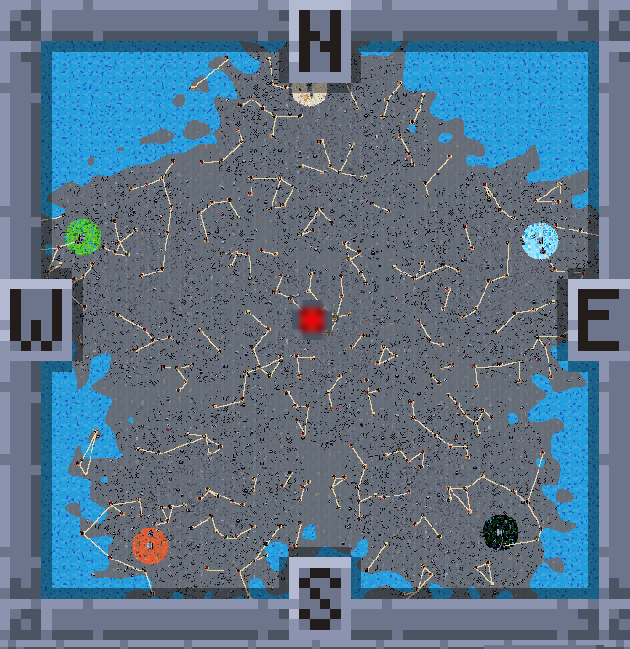
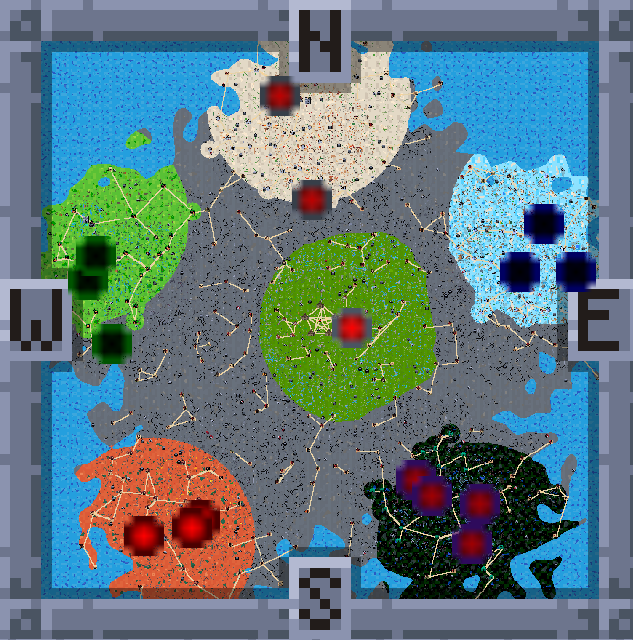
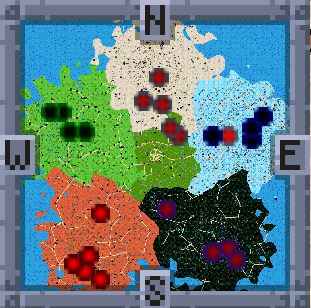

The Forsaken Realms — Game Guide & FAQ
A standalone card-adventure game built on the Forge rules engine.
This guide walks through what's different about The Forsaken Realms compared to the base Adventure experience, how the plane's custom systems fit together, and what to expect as you explore. It's meant to sit alongside the game, not replace discovering things yourself — read as much or as little as you want before diving in. Quick answers to the questions players ask most are in the FAQ at the end.
Introduction
The Forsaken Realms grew out of stock Forge Adventure mode, but changes how the world itself behaves: towns take sides, dungeons come and go, your reputation with each color actually means something, and there's a real path from "wandering duelist" to "ruler of your own Capitol." None of it requires you to play differently deck-wise — it's a layer on top of the normal duel loop, not a replacement for it.
Fair warning: this is a HARD game, and that's intentional. You start with little, the world doesn't wait for you, and losses have teeth. Digging yourself out is the fun — but go in knowing the early game is meant to be a fight.
Windows, macOS and Linux launchers all ship (Windows is the tested one), and every release includes an Android version - playable, but it gets far less testing than the desktop builds.
What's New in 1.23
1.23 is a small update: a few bug fixes, and the engine moves to Forge 2.0.16 (the 10.21 build).
Coming from 1.21? This is what 1.22 added - each item links to where the guide covers it in full. (Coming from 1.20? 1.21 added leveling to 40, the Head and Legs slots, the Capitol Temple and spawns that adapt to your record; all are covered below.)
- Places that come with your level: 25 places from the Realm of Legends - legend lairs, two merchant stalls, the Argivian Military Camp and, at level 20, three end-game dungeons - open up as you level. About 60 new items come with them. See Places That Come With Your Level.
- Enemies in three ranks: most creatures now come as an Apprentice, an Adept or a Master, each rank with its own deck, and every boss, legend and Archmage deck has one stronger card. See Where the Monsters Come From.
- New enemies - Kenrith, Immortal King, the Kraul Broodmother, driders and serpent-folk - and nearly 200 enemies redrawn.
- Gear sets: 15 sets of seven pieces, with bonuses at 3, 5 and 7 pieces worn, and a Sets page once you own a piece. The Warden keeps his promise with Liliana's and Chandra's Pledges. See Gear Sets and The Walkers' Pledges.
- Your hero grows with your level, from Apprentice size to Archmage size. Power from a chest or a diamond comes as a card to turn over. See Ascendance.
- The History replay: the whole realm from day one, from the map or the Victory and Defeat screens. See Territory Control & Color Defeat.
- Fixes: Baneful Cavern is fully walkable, and many art fixes.
Starting Out
- Race selection decides your hero's look, your starting expansions (four per race - how many you start with depends on difficulty - and the cards your starting deck is built from) and two starting shops. Your color comes from the Color picker. A
?help button on the race-selection screen explains what each race actually grants before you commit. Twenty races, including the Goblin, Angel, Merfolk and Vampire - the full list is in Races. - Difficulty affects more than combat: enemy roaming-encounter tiers, what buildings and research cost, what your cards sell for, how much Power each Ascendance level costs, and how many editions you start with unlocked are all difficulty-scaled.
- You start with next to nothing. You wake in a cave a short walk from Orazca, the ruined town at the heart of the map, with a Homeward rune that will always carry you home. The opening quest, "Oaths at the Ring", sends you around the five Ring Cities that circle Orazca, and each hands over part of your starting kit: gold, Shards, Wood, Stone, your starting items and your Challenge Coins. (Skip the introduction and you get the whole kit at once.) Starting gear with a slot of its own - Leather Boots, say - goes straight on if that slot is empty and your level allows another main item: at level 0 that is one, so any other piece of the kit waits in your bag (see Equipment Slots).
- Your starting deck is a real, playable toolkit — expect to reshape it as you loot and buy cards, not to carry it unmodified into the late game.
Changes from the Base Game
Reputation & Color Alliances
Every color tracks its own reputation toward you, independent of the others. Reputation moves in five tiers - Partner (80+), Happy (30-79), Neutral, Unhappy (-30 to -79), and War (-80 and below) - and each tier changes real things: card-shop pricing (30% cheaper as a Partner, 40% pricier at War), how often that color's mages target you, and whether you can enter their towns at all. At War, ordinary towns bar you (you can storm them instead) and a color's own capital charges a steep gold toll just to set foot inside.
Your standing with a color also shapes what you'll run into on its land. Roaming enemies there skew noticeably weaker with a Partner or Happy standing and tougher the worse things get, down to War; the color's own creatures make up three times their usual share of what you meet at War and a third of it as a Partner; and the worse your standing, the more of what you meet comes from the land itself rather than its dungeons (see Where the Monsters Come From). Only Unhappy and War land holds Legends, and at War a color also sends its own arena champions roaming. Your own territory is always the safest place to fight, regardless of anyone else's standing. Separately, the world as a whole trends toward tougher roaming enemies the longer a run goes on, week by week, capped well short of an endless escalation - so the opening weeks are the gentlest part of any run, by design.
The numbers behind all of this are in Color Reputation, in Detail.
Territory Control & Color Defeat
Towns aren't static. Each color's territory expands or contracts around its castle, capital and towns over time, and whose land you're on changes your travel speed: 15% faster on your own, and on a color's land anywhere from 10% faster (Partner) to 10% slower (War). Push a color all the way to War and you can take the fight to it: storm one of its towns (once a week per town) and a win makes the town yours, or storm its capital against two Archmages at once - taking a capital halves the war mages that color can field. Bring down a color's castle by beating the Lord inside and the color falls for good - its gates are sealed, though: you need that color's Secret Entrance Key, dug up with its treasure, or War with it (see Lost Treasure Hunts). Mind the castle's champion on the way in: one of the color's own Archmages walks the ring of paths around the keep, notices you from five tiles off and gives chase - two of them on Insane, always on opposite sides of the ring. Once the color falls, the consequences ripple outward: its towns and capital revert to the neutral Wasteland, the two colors beside it on the wheel each send their next mage straight at you, and every surviving color can field one more mage from then on.
Here is how that looks on the world map, at three moments of one game. (These shots predate the mountain barrier described under The World, but the colors spread the same way.)

Day one. The Forsaking left the land a gray Wasteland. Each of the five colors holds only the ground around its Capital on the rim - white to the north, blue east, black south-east, red south-west, green west - and you begin in the middle.

A few weeks in. Every color has pushed out from its Capital, and your own realm - the circle in the middle - has grown around your Capitol. The blurred dots are mages on the march, each in its color's hue (black's are purple); a dot inside someone else's land is an attack on its way.

Late in the game. The Wasteland is gone. Every border now touches another, and the frontier towns are where the colors - and you - fight it out.
Watch it happen. The map screen's History button replays your game from its first day to today, the whole world on one screen with the fog of war lifted: each color's land filling in, town dots changing hands, a legend with every power's towns and share of the land, and a caption for your own milestones (towns you restore, take or lose, the Capitol). The five AI castles are drawn as small keeps in their color - grey and cracked once one has fallen, with a caption for the fall - and the mountain ranges show as rock, which no territory crosses (their ground is left out of the land shares). Play, pause, change the speed or drag the slider to any day. The history is recorded as you play, so a game started before version 1.22 replays from the first day it was loaded on 1.22 - until a second day is recorded there is nothing to play yet. The end screens - a run won or lost, a death, a boss's defeat - have a History button too, so you can watch the whole game before you choose; closing the replay brings the same screen back.
Winning and Losing
Losing a duel never ends a run - it costs gold, life and your ante (see Notes on Difficulty). A run has one way to win and three ways to lose:
- You win by holding all five Ring Cities and bringing down all five colors' castles. You can keep playing afterward. A Ring City held by an AI color challenges you at its gate, whatever your standing: two of its champions fight you at once.
- You lose if your Capitol falls. A war mage that gets past your Capitol's guards forces you into a best-of-three defense duel, wherever you are. Lose it and the run is over.
- You lose if one AI color holds three of the five Ring Cities. You get a warning the moment any color holds two.
- You lose if no free town is left: you hold no town and no Capitol, and an AI capture leaves no wasteland town anywhere - no working or ruined one, and no unclaimed Ring City - for you to take.
A defeat screen then returns you to the main menu.
Time, Day & Night
The Forsaken Realms runs on a living clock. Every in-game day the world ticks forward: territory spreads, mages march, shops restock on their weekly cycle, mines pay out and guards draw their wages on payday (the first day of each new week - days 8, 15, 22 and so on), quest timers count down (see Quests), and dungeons age toward their rotation. A HUD clock shows the time of day and a Day/Week tracker keeps the calendar visible. The tracker counts the day within the week (1-7) and numbers the weeks from 0, so day 8 shows as "Day 1, Week 1". When this guide says "week 1", it means days 1-7 - the HUD's Week 0.
At normal speed a day lasts 194.4 seconds - about 3 minutes 14 seconds of play - so a week goes by in under 23 minutes. A Speed-Up toggle runs the clock 50 times faster when you're waiting on the world rather than exploring it (holding Z speeds things up too). Monsters keep pace with the clock: a game day brings the same number of them at any speed, and new ones stop coming while about 14 are already roaming within 24 tiles of you, so the screen never fills up.
Day and night change the fights themselves. Between 6am and 6pm, enemies you battle on the overworld get a life bonus or penalty based on the terrain you fight them on - and the effect flips at night:
| Terrain fought on | Day (6am-6pm) | Night |
|---|---|---|
| White (plains) | +10% life | -10% life |
| Green (forest) | +5% life | -5% life |
| Black (swamp) | -10% life | +10% life |
| Red (mountain) | -5% life | +5% life |
| Blue / neutral / your land | no change | no change |
In practice: raid the swamps at high noon and the plains after dark. The modifier applies only to roaming overworld fights - dungeons, towns, Arenas, and Inn tournaments are unaffected.
Fog of War
Fog of War is on by default (Settings can switch it off). Black is land you have never explored, dimmed is land you have seen but can't see right now, and bright is what's in view: the circle around you, your own land and towns, an Outlook's reach, a Bonfire's light. Creatures only show in the bright, and so do the resource pickups (gold nuggets, wood, stone and the rest), which come and go on ground you only remember. The marker on a place you haven't visited dims with the fog around it.
A town, capital or castle lights up the land around it for a few seconds each time you come within reach of it - not only the first time - and again when you leave it, so you can get your bearings. Your own towns stay lit for good.
The fog also changes what you meet. Where you can't see right now - dimmed or black - roaming creatures turn up more often, lean toward the tougher ranks, and move 10% faster. In the light they come less often and the mix leans easy. Your own light counts, so a Torch pushes the danger back - and a creature chasing you slows down as it steps into your light. (With the fog switched off, the whole map counts as lit.) The Item Guide covers the Torch and the Bonfire.
Where the Monsters Come From
Most of the creatures roaming the realm come out of its dungeons and caves. Every ordinary dungeon or cave on the map - whether you've found it or not - sends creatures into the land around it while it stands. The land itself adds only a share of its own:
| Land you stand on | The land's share | The dungeons' share |
|---|---|---|
| Your own land | 15% | 85% |
| The Wasteland | 25% | 75% |
| A color's land, Partner | 15% | 85% |
| A color's land, Happy | 20% | 80% |
| A color's land, Neutral | 25% | 75% |
| A color's land, Unhappy | 30% | 70% |
| A color's land, War | 40% | 60% |
- Reach. A dungeon pulls at full strength within about 10 tiles and fades out by about 28. Several dungeons close together don't add up beyond one at full strength, but with none in reach only the land's own share comes - so clear the dungeons around you and the land there goes quiet.
- One creature, three ranks. Most creatures come as an Apprentice, an Adept or a Master - the same creature, drawn bigger at each rank, with more life and a better deck. The decks share most of their cards: an Apprentice plays at least 60 cards of mostly commons, an Adept trims that to 50 with better ones, a Master to 40 with rares. The week, the land and your record pick the rank; the land picks the creature. The creatures waiting inside a dungeon roll their rank the same way on your first visit (and keep it until the place moves on). Bosses, champions, legends and the Archmages are one of a kind and keep their own decks.
- Which creatures. A dungeon you haven't been inside sends ordinary creatures of its color. Once you've been in, it sends the very creatures that live there - the weaker ones first, the stronger only as the weeks go by. They come at you from the dungeon's side, at the usual distance.
- It grows. Each full week a dungeon stands adds a quarter to what it sends, up to double.
- Clearing it - beating every enemy inside - silences it for good, and the nearest town is grateful: +1 town reputation.
- What doesn't count. Story places, boss lairs and castles don't send creatures, and what comes out is never a dungeon's boss, its champion or anyone you could talk to.
- Roads. While you travel a road, the land itself sends nothing new, but the dungeons in reach still can.
- Quest creatures are separate. A creature a quest asks you to defeat - an invasion to stop, a creature to hunt - gets a roll of its own every time, wherever you are: on a road, on your own land, near dungeons or far from them.
The "Find a Dungeon" quest early in the story explains the same thing in the game.
Legends
Legends - the realm's oversized dragon lords, gods and Slivers, and the Arena's wandering champions, many of them best-of-3 fights - have a table of their own, separate from everything else that roams.
- Where. Only on the land of a color that is Unhappy or at War with you. A legend walks a color's land when it carries that color; the few colorless ones walk any hostile land. Never on your own land, the Wasteland, or a Neutral, Happy or Partner color's land.
- How often. Rarely: about one sighting every four to five days of travel on Unhappy land and one every two days or so at War, with at least two days between sightings and only one legend out at a time.
- Which one. The ones you haven't met come first - a legend you have already seen returns only once the others have had their turn - and the same legend is never out twice at once.
- The sighting. A legend never arrives unannounced: you are told which one it is and in which direction, a gold dot marks it on the minimap and the map, and your quest log lists every legend roaming right now with its direction and the days it has left. It appears 12-20 tiles away and holds its ground for three in-game days: it only comes for you once you walk within about 5 tiles, and lets you go once you're 8 tiles off - so the fight is yours to pick.
- The duel. A legend you meet on the overworld starts its duels with a Gemstone Mine in play.
- The reward. A legend pays half the gold and two thirds of the cards on its reward list (its own named card is the last to go); shards, items and +Life rewards are paid in full.
The legends include the twelve added in 1.16: the Seraph of the Burning Brand and the Sunscale Dragon (white), the Skyvault Dragon and the Sixblade Naga (blue), the Nightscale Dragon and Victor, the vampire Archmage (black), the Pyreclaw Dragon and the Cinderstone Brute (red), the Thornscale Dragon and the Bogspawn Horror (green), and the colorless Ossuary Dragon and Blightborn Mutant.
Lost Treasure Hunts
Six treasures lie buried in every world, one in each region: the Wastes and the five colors' lands. A region here is the land as the world was made - the White hunt stays in the old White lands, whoever holds them now. Each treasure has a map torn into nine pieces, and an Archmage guarding it.
- The map. A treasure map covers 30 by 30 tiles in nine pieces of 10 by 10. The first piece you find is always the center one, with a red X on the treasure; every piece after it shows more of the land around it, so the spot gets easier to recognize. The Treasure Maps button - on the world map beside your portrait, and in your inventory - shows all six maps once you've found a piece; tap one to see it.
- Obelisks: one piece a week per region. Each region has one obelisk standing at a time, on open ground you can walk to. Walk onto it and it gives you the next piece of that region's map, shown as a card on the loot screen, then sinks away. A week after it rose it rises again somewhere else in the region, found or not, so obelisks give at most one piece per region a week.
- Map Fragments. A Wastes, White, Blue, Black, Red or Green Map Fragment is a piece in item form: use it from your inventory and it fits the next piece into that map. A whole map, or one whose treasure you've dug up, refuses it and it stays in your bag (it sells, but no shop stocks it). Fragments come from: - the five AI capitals' Arenas - win all three rounds and the prize is that color's fragment 1 time in 9, in place of one of the capital's eight items; - the Archaeologist - about 1 expedition in 65 brings back a fragment for a map that still needs one; - a level-up reward, offered while any map still lacks pieces (see Ascendance).
- The Spade. Your first piece, from an obelisk or a fragment, comes with an old Spade. Wear it in a utility slot and use it from the HUD on the world map: each dig costs 5 Shards and leaves a hole, which stays until that region's treasure is found - a record of where you've already looked. Dig within 2 tiles of a treasure and its guardian rises. You can't dig inside a town or dungeon, and a dig in lands whose treasure you've already claimed is refused, with the Shards handed back.
- The X. With all nine pieces an X marks the spot on your world map, and walking onto it digs there at once - the same 5 Shards.
- The guardian is an Archmage with half again its usual life. Lose and the treasure stays buried - dig there again to call the guardian back. Win and you take the guardian's own loot plus the treasure: 1,000 gold, 40 Shards and four Rare or Mythic cards of the region's color (colorless in the Wastes), 64 Power (see Ascendance), and the region's prize: - each color's treasure holds that color's Secret Entrance Key (below); - the Wastes treasure holds the Cartographer's Compass: while you carry it, your world map shows every obelisk standing right now.
Once a treasure is yours, the holes dug for it fill in.
Castle Keys. The five colors' castles - the White, Blue, Black, Red and Green Castle - are sealed. There are two ways in: carry that color's Secret Entrance Key, dug up with its treasure, or be at War with the color and fight through the front gate. Arrive with neither and the gate turns you back and tells you so. Reaching the sealed gate still counts for the main quest's "Find the ... Castle" stage; taking the seal inside needs the way in. The keys, the Spade and the Compass are quest items - they can't be sold or thrown away.
Town Raids
Raiders from the nearby dungeons can fall on a town - one of yours, or a neutral town you know.
- Which towns. Orazca and your Capitol, your other towns, and working neutral towns you've been inside - never a ruin, an AI color's town, a town an attack mage is already marching on, or one already being raided. The town also needs at least 4 hostile dungeons or caves on the map near it - rotating dungeons and caves, boss lairs and the places that leave once cleared, found or not. "Near" grows with the weeks: within 15 tiles in days 8-14, 17 tiles in days 15-21 and 20 tiles from day 22.
- When. As each week begins (days 8, 15, 22 and so on), every town that qualifies has a 10% chance of a raid, and at most two raids start in a week. No raids in the first week (days 1-7) - and on Easy, none before day 15.
- The raiders come out of those nearby dungeons: the creatures living inside, or, from one you haven't been in, the creatures of its land. While you're within 20 tiles of the town, 3 or 4 of them (the number is set for each raid) stand 3 to 7 tiles outside its walls, and each one that falls is replaced until no more are needed. They chase you like any roamer, stay near the town while you're away, and leave the map when the raid ends.
- The job. Beat 5 raiders within 7 days and the town thanks you: +1 town reputation, 50 Wood and 50 Stone (and 21 Power). Let the days run out and it thinks less of you: -2 town reputation. If the town falls to an AI color or is sacked to ruins in the meantime, the raid simply ends.
- Keeping track. A notice tells you when a raid starts, at each raider beaten and with 2 days left. Your quest log lists every raided town with its count, direction and days left, and the world map's Details view marks it "Pillaged! 2/5".
- Your roaming guards can help. Tick Help with pillaged towns on a roaming guard's orders (your Capitol's Armory, Manage Guards). When a raid starts, a free guard with that order rides out - one guard per raided town - and raiders turn up around it just as they do around you. It hunts the ranks its orders allow, fighting each raider as it fights a mage at a gate, watched or simulated, and every raider it beats counts toward the five, reward included. A guard that loses is out of action for some days, and the raider goes back where it stood. When no guard can go, the raid's notice says why: none has the order ticked, or the one that has it is hurt, busy or on its way home - and then it rides out once it's free.
The Capitol
Your Capitol can rise in one place only: Orazca, the ruined town at the very center of the map. Restore it at its Job Board like any other ruin, hold five towns in all (Orazca counts), and the same Job Board offers the upgrade. The Capitol is a walled, castle-sized town with a layout of its own, two guards instead of one, and 24 building slots - 16 open ones plus five colored Land Shops, a Utility Land Shop, a Booster Shop and an Armory, against an ordinary town's 9 (8 open slots and an Armory). It also offers buildings no ordinary town does: the Bank, the Exchange, the Archaeologist, the Temple, the Research Lab, Rare and Mythic card shops, and an Arena you can upgrade. Upgrading carries Orazca's reputation, buildings and guards forward, and adds +2 town reputation on top for good measure. The Capitol's Job Board offers the usual town quests and the Capitol's own, such as finding the five AI capitals.
Raising it draws fire. The moment your Capitol stands, every color still in the game sends an Archmage at your realm, and for as long as it stands each color may keep one more attack mage in the field.
Your roads. Raising the Capitol also paves your realm: cobblestone roads join it to every town you hold (captured Ring Cities included), taking over the old sand roads wherever they already run, and every town you restore or capture later joins the network. Any road speeds you up, but your own are faster still - about 1.7x your normal pace against the old roads' 1.5x, and the extra is yours alone. The Capitol sits on a cobbled plaza six tiles wide and five deep, each of your towns on one five wide and four deep.
Wood & Stone
Beyond Gold and Shards, you'll collect Wood and Stone. They come from winning duels (Green enemies lean to Wood, Red ones to Stone - see below), from world-map resource sparkles and dungeon pickups, from chests and quest rewards, and - once you own a town - as steady weekly income from a Lumber Mill or Stone Mine. They're spent on building and upgrading structures, and on the Capitol upgrade itself.
What a Win Pays
Roaming and dungeon enemies pay by rank - Apprentice, Adept, Master, Archmage, shown in the enemy's name - and your first victory over each kind of enemy is the big one.
- Cards. A repeat win pays 1 / 2 / 2 / 3 cards by rank. A first victory pays 2 / 3 / 4 / 5, keeps the best rarities the enemy rolled, and adds one more non-land card from its deck (Common or Uncommon; Rare too on Easy). Masters and Archmages always keep their best cards first; an Apprentice or Adept pays at random on a repeat win. Gear and the Ascendance perks that add reward cards (Spoilsman, Challenger's Mark, Hunter's Ledger) still add them, and Easy pays one more card per win. A payout never hands you the same card twice while there is something new to give: when the enemy's deck runs out of new cards, the rest come from the sets of the enemy's color, in its deck's colors. A second copy, or gold, is the last resort.
- Gold and resources. Every win pays gold plus, usually, one bonus resource that leans to the enemy's color: White to more Gold, Blue to Shards, Red to Stone, Green to Wood. Black is balanced, an enemy of two colors leans both ways, and a colorless one is balanced with a smaller purse. The purse grows with rank, is half again as large on a first victory, and a quarter larger when you beat an enemy that had the better record against you. So hunt the color whose resource you need. A color's "defeat five" quest counts those kills wherever they happen, out in the wilds or down in a dungeon.
- Bosses, tournament opponents, chests and quest rewards pay what they always did. An Arena champion you beat pays one Rare card from its deck. A legend pays half its gold and two thirds of its cards.
- A champion met outside the Arena - a cave's champion, or a color's war champion roaming its land at War - pays twice what an ordinary enemy of its rank pays for a first win: twice the cards, best rarities first, and twice the purse, plus its own signature card when it has one.
- An enemy that flees. With the Intimidating perk, an ordinary roaming enemy you've beaten more often than it has beaten you may flee on contact instead of fighting - 5%, 10% or 15% of the time with ranks I, II or III. It drops half its loot: half its gold, Shards, Wood and Stone, a random half of its cards and items (an odd one goes either way on a coin flip) and half the Power a win would pay; a +Life reward waits for a real win. Nothing else counts - no win, no quest step, no reputation. Bosses, a color's mages, legends, raiders and quest creatures never flee, and nothing flees inside a town or dungeon.
- Power. With Ascendance, a win's loot also holds a Power card - see Ascendance.
- Every number here is a setting:
cardBudget...(1 to 5 cards each) andresourcePurse...in the plane'sconfig tables/settings.json.
Ascendance - Your Level
Since 1.20 your character has a level: Ascendance. You earn Power (the sun icon) from almost everything you do, and every level pays something - every fifth level a fixed milestone (+1 max life, a title and room for more gear), every other level a reward you pick. The Asc panel on the HUD, under your Wood and Stone, shows your level and a bar to the next; a gold ! beside the level means a reward is waiting. Each Power award is listed in the notice Log, and a level-up gets a banner.
Ascendance comes with a New Game or a New Game+. A character started before 1.20 has none and plays as it always did. A New Game+ starts it over at level 0.
You grow with it. Your hero is drawn a little bigger with every level: about 13 px tall at level 0 - an Apprentice's size - to 25 px at level 40, an Archmage's, so the map shows how far you have come. Only the look changes: walls, doorways and the camera treat you exactly as before. A character without Ascendance keeps its usual size.
Power from duels. A won duel pays by the enemy's rank, times the one highest bonus that applies - bonuses never stack:
| A win over... | Apprentice | Adept | Master | Archmage |
|---|---|---|---|---|
| An enemy you have beaten before | 9 | 15 | 24 | 34 |
| An enemy you have never beaten (a first win), a champion (a cave's, or a color's arena champion) or an attacking war mage (x1.5) | 13 | 23 | 36 | 51 |
| A town or capital you storm, the defense of your Capitol, or a treasure guardian (x2) | 17 | 31 | 48 | 68 |
| A legend (x2.5) | 21 | 38 | 60 | 85 |
| A boss (x3) | 26 | 46 | 71 | 102 |
- It's paid with the loot. A win's Power shows as a card among its loot and is yours when you collect it. An Arena match pays at once; Inn tournament matches pay at the tournament's end instead (below).
- Outgrown enemies pay less. Above level 8 an Apprentice's win pays 10% less for each level you have over it, above 15 an Adept's and above 22 a Master's - but never less than 20% (from level 16, 23 and 30). Archmages never. A boss's or legend's own rank counts the same way.
- Your guards earn for you. When a roaming guard wins a fight, or a town's guard turns back a war mage, you get the beaten enemy's repeat-win Power (half again against an attacking mage), less the outgrown share - noted in the Log only.
- A lost duel, and a Deck Tester game, pay nothing.
Power from everything else:
| What you did | Power |
|---|---|
| First visit to a town or capital | 4 |
| First visit to any other place | 3 |
| Clearing an ordinary cave / dungeon (every enemy beaten) | 7 / 13 |
| Restoring a town | 26 |
| Taking a town, capital or Ring City by force | 34 |
| Raising the Capitol | 85 |
| A side quest / a story quest (the introduction, or the tutorial, pays its 50 in full - that is level 1) | 17 / 43 |
| Stopping an invasion, by its toughest invader: Apprentice / Adept / Master / Archmage | 43 / 64 / 85 / 128 |
| Driving the raiders from a pillaged town | 21 |
| Winning an Arena bracket (each match also pays its duel) | 34 |
| An Inn tournament: each match won, and more for winning it without a loss | about 13 each, +26 |
| Digging up a treasure (its guardian's duel pays as well) | 64 |
| An overworld chest - one outcome in seven | 13 |
| A Mystery pickup (the diamond) - now and then, in place of a resource | 21 |
Power from a chest or a diamond comes as a Power card - the sun and the amount - that you turn over on a reward screen, like a won duel's; collecting it pays the Power.
These are the plane's numbers in config tables/ascendance.json times its leveling speed, 0.85. The Zealot perk adds its share on top of all of them.
Levels. You start at level 0, and level 1 costs 50 Power on every difficulty. After that each level costs more - 30 for level 2, then 50, 75, 100 and so on, up to 630 for level 30 and 1,010 for level 40 - times your difficulty's level cost: Easy x0.8, Normal x1.05, Hard x1.32, Insane x1.61 (rounded to 5). The Power you need in all:
| Level | Easy | Normal | Hard | Insane |
|---|---|---|---|---|
| 5 | 255 | 315 | 385 | 460 |
| 10 | 1,035 | 1,340 | 1,670 | 2,030 |
| 15 | 2,490 | 3,245 | 4,070 | 4,955 |
| 20 | 4,270 | 5,580 | 7,005 | 8,535 |
| 25 | 6,355 | 8,320 | 10,450 | 12,740 |
| 30 | 8,755 | 11,470 | 14,400 | 17,570 |
| 35 | 11,675 | 15,300 | 19,220 | 23,445 |
| 40 | 15,395 | 20,180 | 25,360 | 30,930 |
Past 40 there is no cap, but the going is slow: level 41 costs 2,000 Power times your difficulty's cost (2,100 on Normal), each level after it 250 more, and each one pays +1 max life and nothing else. If an update changes the costs, your save keeps its level and its share of the way to the next.
Every fifth level is a milestone: +1 max life and a title, and most raise how many main items or companions you may wear (see Equipment Slots):
| Level | Title | Main items | Companions |
|---|---|---|---|
| 0-4 | - | 1 | 1 |
| 5 | Unbound | 2 | 1 |
| 10 | Reclaimer | 3 | 1 |
| 15 | Warden of Ash | 4 | 2 |
| 20 | Seal-breaker | 5 | 2 |
| 25 | Sovereign | 5 | 3 |
| 30 | Ascendant | 5 | 3 |
| 35 | Weavebinder | 6 | 3 |
| 40 | Eternal | 7 | 3 |
Every other level up to 39 offers a choice: tap the Asc panel and take one of three rewards (four with the Insight perk). An offer holds at least one lasting perk and one one-time reward while any are left, and closing it doesn't change it. Not now leaves it waiting; choices stack up, and each pays at the level it was earned, so waiting costs nothing.
One-time rewards, scaled to the level the choice was earned at:
- Gold, 85 a level (1,020 at level 12), or Shards, Wood or Stone, 15 a level.
- Rare cards in a color you choose (you pick it right after the reward): two rares (levels 1-12), four rares (13-22), or two rares and two mythics (23 on), all of that one color.
- An item: a random Common (levels 1-12), Uncommon (13-22) or Rare (23 on).
- A booster pack of an edition you have unlocked.
- A map fragment: a treasure-map piece you're still missing (offered only while there is one).
- A blueprint you don't know yet (only while one is left).
- A Bronze Challenge Coin.
- Goodwill: +3 reputation in your Capitol (only once it stands).
Cards, items, packs and map pieces are turned over on a reward screen like any loot.
Lasting perks last the whole run, and most have ranks: take one again and it goes up a rank, until its last. Some are only offered from a certain level, two pairs exclude each other, and a perk at its last rank isn't offered again. They are all listed below.
Re-roll. Don't like an offer? Re-roll it once per level for 35 / 40 / 45 / 50 Shards (Easy / Normal / Hard / Insane). The new offer avoids the rewards it replaces while there are others to show. The Gambler perk allows two re-rolls a level at half price - 18 / 20 / 23 / 25 Shards each.
Your Level sheet. With no reward waiting, tapping the Asc panel shows your level and title, the Power to the next level and the main items and companions you wear, with a Level sheet button: every level you have reached and what it gave, each perk with what its rank does. Your character sheet has the same button - with a reward waiting it takes you straight to the choice.
Turning it off. Settings has a Leveling (Ascendance) switch. Off, you earn no Power, there is no main-item limit (for your guards either), the Asc panel is hidden and your perks do nothing. What you've gained stays - your max life too - and switching it back on carries on from there; any main items over your limit then go back in your bag. The companion limit holds either way: 3 without Ascendance.
The lasting perks:
| Perk | Ranks | What each rank does | First offered at level |
|---|---|---|---|
| Appraiser | 3 | Cards sell for 10% / 15% / 20% more (an ante Buy Back still costs what it did). | 1 |
| Architect | 3 | Buildings and town restores cost 10% / 20% / 30% less. | 1 |
| Aura of Fear | 3 | Enemies start your duels with 10% / 20% / 30% less life. Never with Challenger's Mark. | 1 |
| Challenger's Mark | 1 | Enemies start your duels with 20% more life; your wins pay +1 card and a 25% larger resource purse. Never with Aura of Fear. | 11 |
| Envoy | 2 | A win costs you 15% / 30% less reputation with the beaten color and its allies. Never with Warmonger. | 1 |
| Far Sight | 2 | Your sight radius +15% / +30%. | 1 |
| Focused | 1 | Your first mulligan in each game is free - you keep a full hand. | 16 |
| Gambler | 1 | Two re-rolls a level instead of one, each at half price. | 1 |
| Guard Focus | 1 | Your roaming guards' first mulligan in each game is free. | 16 |
| Haggler | 3 | Shop prices -5% / -10% / -15%. | 1 |
| Home Ground | 1 | +3 life in duels fought on your own land, your towns included. | 6 |
| Hunter's Ledger | 1 | Your third win over an enemy (by name) adds a rare from its deck to the loot, else a mythic - once per enemy. | 8 |
| Insight | 1 | Every later level offers 4 rewards, not 3. | 1 |
| Intimidating | 3 | 5% / 10% / 15% chance that a roaming enemy you have a winning record against flees on the overworld, leaving half its loot and half its Power. Never a boss, war mage, legend, raider or quest enemy. | 1 |
| Law of Stakes | 1 | Your first ante re-roll each day is free. | 4 |
| Legend Seeker | 1 | Legends are sighted 15% more often. | 1 |
| Marshal | 3 | Your roaming guards fight with +4 / +8 / +12 life. | 1 |
| Mechanic | 1 | Repairing a cracked item costs 75% less. | 1 |
| Medic | 1 | A defeated roaming guard is out 15 days, not 30 - guards already out heal sooner too. | 1 |
| Mender | 2 | 30% / 60% chance that the item a defeat would crack holds together. | 1 |
| Morning Vigor | 3 | +3 life in your first 1 / 2 / 3 duels each day. | 1 |
| Opening Gambit | 1 | You win the opening coin toss 75% of the time. | 1 |
| Pact of Embers | 1 | +1 card in your opening hand and -4 starting life, every duel. | 8 |
| Prospector | 3 | Resource pickups on the map and your mines' weekly income +15% / +30% / +45%. | 1 |
| Researcher | 1 | Research costs half the Shards and takes 25% less time (3 days less - 4 instead of 7 - in a game from before 1.24). | 1 |
| Scientist | 1 | Each research that completes gives you a rare of each color from that set (up to five). | 1 |
| Shardwell | 2 | +2 / +3 mana shards at the start of each duel. | 1 |
| Splinter Cache | 2 | You start each duel with a Clue token; rank II adds a Treasure token. | 6 (rank II: 16) |
| Spoils of War | 1 | Each win of a roaming guard leaves a rare from the beaten enemy's deck (else a mythic) at your Armory, under Collect Spoils. | 1 |
| Spoilsman | 2 | +1 / +2 cards on a first win over an enemy (not a champion's). | 1 |
| Stubborn | 2 | A lost duel costs 25% / 50% less gold and life. | 1 |
| Swift Feet | 3 | Overworld speed +5% / +10% / +15%. | 1 |
| Temple Priest | 1 | Your Temple's weekly offering pays twice the cards. Offered once your Capitol has a Temple. | 1 |
| Warmonger | 2 | A win gives you 15% / 30% more reputation with the beaten color's enemies. Never with Envoy. | 1 |
| Zealot | 3 | +8% / +15% / +25% Power from everything. | 1 |
Perks that change a duel work in your own duels - the Arena included, not Inn tournaments - and the guard perks in your roaming guards' fights. The extra cards from Challenger's Mark, Hunter's Ledger and Spoilsman come with the wins that pay by rank (see What a Win Pays). Focused, Guard Focus and Splinter Cache's second rank are allowed from level 15, and Challenger's Mark from 10, but those are milestone levels, so the first offer comes a level later.
Buildings & the Economy
Towns you restore can be built up with dedicated economy buildings: Gold/Wood/Stone/Shard Mines for steady weekly income, a Trader (any town, including your Capitol) for converting Gold into Wood/Stone at a markup, a Bank and Exchange (Capitol-only - a Trader built at your Capitol can also be upgraded into an Exchange, which trades at better rates and adds Shards - the Exchange takes over the Trader's slot, so a town has one or the other, never both), an Outlook (expands your fog-of-war vision radius - 2x in a town, 3x in your Capitol), a Teleporter network for fast travel between any two Teleporter-equipped locations, and an Archaeologist who can be sent on week-long expeditions for a chance at boosters, rare items and treasure-map fragments. A Temple (Capitol-only) turns the duels you and your guards win into a weekly offering of cards - see The Temple. Guards can be hired to defend a town, paid weekly out of your own coffers.
Restoring a town. A ruin's Job Board offers the restoration. The fee grows with your realm: 200 gold and 20 wood while you hold fewer than five towns, then 50 gold and 10 wood more for every five you hold (250 + 30 from five towns, 300 + 40 from ten, and so on), scaled by difficulty like every other cost (Easy 25% cheaper, Hard 25% and Insane 50% dearer). Orazca, the Capitol and towns taken by force count; lose towns and the fee falls with them. Once it's paid you are sent back out to the map - step back in and the town stands in your own town layout, its Inn open and its other slots still rubble for you to build on. Ruins and neutral towns you don't hold keep the old Wasteland look, and Orazca, once restored, keeps the Warden inside. A town you capture from a color starts out the same way.
Town reputation caps building. Each point of a town's own reputation allows three buildings there. You get +1 for restoring the town, +2 when it becomes your Capitol, +1 for each attacking mage you beat there, +1 for winning its Inn tournament, +1 when you clear a dungeon near it, +1 for driving raiders off it (and -2 if you don't - see Town Raids), and more from its Job Board quests. Destroy Building clears a slot, with no refund. A Capitol's colored Land Shop can be repaired (50 gold) once you've visited that color's AI capital.
Town Specialties
Every town you restore picks a specialty right after you pay the restore fee: one thing it does better than the rest. A town you take any other way (captured from a color, or a Ring City that opens its gates) asks the first time you walk in. Choose "Later" and the pick waits, free, at the town's Job Board. Your Capitol, and Orazca before it, never take one.
| Specialty | What it does |
|---|---|
| Mining | this town's own mines pay 50% more (a Gold Mine 100 -> 150, a Shard Mine 20 -> 30 a week) |
| Research | all your research runs 5% faster for each Research town, up to 50% at ten towns: the days shrink (40 days unfed -> about 27 at the cap); the cards you feed and the Shards are the same with or without towns |
| Outpost | the town is lit as if it had an Outlook (twice its radius; with an Outlook, three times), and it is 5% harder to capture |
| Smithy | this town's Armory rolls its items on your Capitol's rarity table |
| Garrison | 20% harder to capture, and no raid starts here |
| Market | this town's card shops are 10% cheaper, and one restock a week is free |
The capture defense of a Garrison or an Outpost comes off an attacking mage's chance after your guards have fought, with the Outlook and your reputation there, and a mage always keeps at least a 5% chance. A Market's free restock is one per town per week, in whichever of its card shops you use it, and it doesn't count toward that week's restock surcharge.
Changing a specialty costs half the town's current restore fee, in gold, at its Job Board; after that the town keeps its new specialty for 7 days. A town that falls loses its specialty with everything else; take it back and it chooses again. On the World Map each specialized town carries a small badge.
Town specialties come with games started (or taken into New Game+) on version 1.24 or later; an older save doesn't have them.
Realm Milestones
Every 10 towns your realm reaches - the most you have ever held at once, your Capitol included - you choose one realm boon from three. The restore that reaches 10, 20, 30, ... asks right after its specialty; a town taken any other way asks the next time you walk into one of your towns. "Later" leaves the boon waiting at the Job Board of any town you hold. Boons are yours for the rest of the game: a town that falls takes none away, and winning it back earns no second boon.
| Boon | What it does |
|---|---|
| Deep Veins | your Mining towns' mines pay double instead of 50% more |
| Grand Library | each Research town speeds research 7.5% instead of 5%, up to 75% |
| Watchtowers | Outposts are lit three times their radius (four with an Outlook) and are 15% harder to capture |
| Master Smiths | a Smithy town's Armory sells for 20% less |
| Iron Garrisons | Garrison towns are 35% harder to capture |
| Merchant Guild | a Market town's card shops are 20% cheaper |
| Tithe | every town you hold pays 15 gold each payday (take it twice for 30) |
| Town Watch | every town you hold is 10% harder to capture (take it twice for 20%) |
| Lamplighters | every town you hold lights one more tile around it |
| Royal Grant | your next research at the Lab is free and done at once (up to twice) |
The first boon offered upgrades the specialty you hold the most towns of; a specialty's boon needs at least two towns of it. The three are chosen once per milestone, so closing the choice or reloading doesn't change them. World Standings shows your boons and the next milestone.
Realm milestones come with games started (or taken into New Game+) on version 1.24 or later; an older save doesn't have them.
The Temple
The Temple is a Capitol-only building (300 gold and 100 Stone on Normal; 25% less on Easy, 25% more on Hard, 50% more on Insane) that turns your victories into cards.
- Honor. Every duel you win honors the colors of the enemy you beat - a two-color enemy counts half for each color, a three-color one a third. Colorless enemies, Arena duels and Inn tournaments don't count. Your guards' wins do: a town guard turning back a mage, and a roaming guard beating a mage or a raider, watched or simulated. The count runs from day one, Temple or not, so a Temple built mid-week pays for the whole week.
- The chart. Inside, the Temple shows this week's honor as a bar for each color, the most honored at the top with 1st, 2nd and 3rd marked (ties go in White, Blue, Black, Red, Green order), and how many days the week has left.
- The offering. When the week ends (days 8, 15, 22 and so on), the most honored color gives 1 Rare card, the second 2 Uncommons and the third 4 Commons - non-land cards of that color from the sets you have unlocked, one-color cards first. With fewer than three colors honored, fewer places pay. Then the count starts over. A week that ends with no Temple in your Capitol pays nothing.
- Collect Offering. The cards wait at the Temple - a notice tells you the offering is ready - and keep piling up, week after week, until you come for them. The line under the chart says how many cards are waiting, from how many weeks, and Collect Offering (beside Destroy Building) opens them the way a booster opens: face down, turned over by Done, added to your collection by the second Done, with the "All" box to auto-sell. A destroyed Temple keeps your waiting cards for you - rebuild it and they're there - and New Game+ adds anything still waiting to your collection.
- Temple Priest. This perk (Ascendance) doubles every offering: 2 Rares, 4 Uncommons and 8 Commons. It's offered only once your Capitol has a Temple.
Your roaming guards' Spoils of War (another perk) wait the same way at your Capitol's Armory: Manage Guards shows how many cards wait, and the Guards window's Collect Spoils opens them.
Progressive Set Unlocks
Not every card set is available from turn one. You start with a few (scaled by your starting race and difficulty), and the Research Lab in your Capitol opens any other set. Every card of a set you sell or sacrifice takes days (and some Shards) off that set's research, until it needs no wait at all. Several can run at once. (Don't confuse this with the Archaeologist, who runs week-long expeditions for cards and items - a different building doing a different job.)
Your shops stock only what you have unlocked. A card shop you build sells cards from the sets you have unlocked - nothing else, and in a printing from one of those sets. Unlock more sets to stock your shops. In return they sell cheaper than anyone else's: 25% under a neutral town's prices and 40% under an AI town's.
Full detail — what you start with, where the other sets live, and exactly how to unlock them — in Card Sets.
Dungeons That Actually Rotate
Dungeons and caves aren't fixed forever. Every visible one has a lifespan - 20 to 40 days - after which it despawns on its own (at once if you lose a fight there and it isn't a story target), and a fresh one appears elsewhere to take its place, drawn from a much larger reserve pool than what's ever visible at once. Clearing a dungeon out completely also retires it, making room for something new - completely means every enemy and every pickup, on every floor of a dungeon with stairs. Beat every enemy but leave loot behind and it waits for you to come back for the loot, with only a quarter of the days it had left. Stripping its loot while its guards still stand also cuts it to a quarter. Side-quest-linked dungeons get extra grace: three failed attempts before they're gone for good, and 30 extra days while a quest still points at them. Story-critical locations never disappear - except a few that leave once cleared: the five Strixhaven classrooms, the Court of Paliano, the Temples of Chandra and Liliana, the Aerie, and six of the Legendary Dungeons - the Ancient Opal Cavern, Eclipsed Elven Court, Ashling's Domain, Planeswalker Dueling Club, Idyllic Beachfront and Peaceful Clearing: a full clear and the walk out take them off the map until they return.
While an ordinary dungeon stands, it sends creatures into the land around it, more the longer it stands - see Where the Monsters Come From.
Loot fights back, too: a chest or booster pack inside a dungeon usually has a guard of its own. Grab it while the guard still stands and the guard comes after you - a little faster than you walk. Loot behind a locked gate or door is the exception: the lock is its guard, so once you've found the key, pulled the switch or beaten what opens it, what's inside is yours.
Boss lairs follow their own rule. A lair leaves the map only once you've beaten its boss and walked out with nothing left inside - losing there doesn't make it vanish - and 10 to 30 days later it comes back to the same spot, fully restocked. Return visits pay half the gold, resources and cards; a +Life reward and the boss's own signature item pay only once, and every other item is a coin flip - though a key you need to get deeper in always drops.
The Blue Towers and the Forgotten Cave never rotate away: each locks a door behind a key found inside it, so neither a lost duel nor the passing days remove one. Clear one completely - every enemy and every pickup, on every floor - and walk out, and it leaves like a boss lair, coming back 10 to 30 days later restocked, on a lair's return-visit rewards.
Valor's Reach Arena runs in seasons. Beat all seven of its contenders - the six duos in the ring and the champion behind the WINNERS ONLY gate - and walk out with nothing left on the floor, and the arena closes, taking its shops with it. 10 to 30 days later it opens again in the same spot with every contender back, on a boss lair's return-visit rewards, and every opponent there starts with an extra Wastes in play - one more each time it returns, up to three (two on its third season, three from its fourth).
Quests
- Up to 10 side quests can be active at once.
- A side quest lasts 15 days from when you take it, then fails (quests taken in an older version keep the 20 days they started with). Story quests never expire.
- "Return to town" stages wait for you. A bounty or reward that asks you to go back pays when you walk into that town - not wherever you happen to be. If the stage starts while you're already standing in the town, step out and back in.
- The creatures a quest asks for come to you. While a "defeat" quest is active, its creatures get their own roll every time new creatures appear - on roads and on your own land as much as anywhere. With several such quests, each gets an equal turn.
- Invasions (goblins, merfolk, the undead, elves, soldiers, orcs, giants, demons, knights, bandits and vampires) ask for a few wins against the invaders - 2 on Easy, 3 on Normal and Hard, 4 on Insane - then for their leader. The leader is one rank above the toughest invader you beat (an Archmage at most), and on Hard and Insane he starts with a Gemstone Mine in play. The reward grows with the leader's rank: 300 / 500 / 800 / 1,200 gold and 2 or 3 local reputation. A town won't offer the same invasion twice in a row.
- Eviction Notice sends you to clear one of the nearer dungeons or caves - a different one each time.
- Svyelunite Temple, on a blue shore, is a battle already under way between the Vodalian merfolk and the Homarids. Its heralds ask you to pick a side ("The Tides Give, the Tides Take"); beat the other side's fighters there for a reward that depends on whom you helped. It is found in worlds made from this version on.
- The blue dot in the quest list marks the quest you're tracking, and counting quests - "defeat five Blue enemies", "clear three dungeons" - show their progress there, "(2/5)".
Ante, Tournaments & Hostile Lands
Ordinary duels are played for ante (on by default): each side stakes a card, winner takes it. If you lose a card you value, a Buy Back option lets you repurchase it on the spot (priced by rarity), and an escalating-cost Re-roll lets you swap out an ante you don't want to risk before the duel starts — re-rolls won't repeat a card you just rejected. Or hand over a Bronze Coin (the button on the "Card Lost" screen) - see The Bronze Challenge Coin.
Innkeepers run weekly tournaments (Draft, Sealed, and - once per player - Jumpstart) — these are entry-fee events with prize support, no ante at stake. They also offer an opt-in "simulate the AI rounds" mode if you'd rather not watch every AI match play out. Details in Inn Tournaments.
Beyond the tavern, remember the world itself takes sides: depending on your standing with each color, their lands are more hostile or more friendly — travel speed, shop prices, town access, and who their mages hunt all follow your reputation. And once you've built your Capitol, it hosts an advanced Arena with a challenge tier (and champion fights) no ordinary town offers.
Arena fighters play their own decks, the same ones they'd bring to a fight in the wild, and a bar under each portrait shows its rank: a short red bar for an Apprentice, brown for an Adept, silver for a Master and a long gold one for an Archmage. The brackets at the five AI capitals, and at your own Arena until you upgrade it to level 2, never seat Apprentice-tier fighters: about half the field are Adepts, a third Masters and the rest Archmages. A Level 2 Arena's Challenging bracket seats only Masters and Archmages, at least two of them Archmages.
- The field is fixed for the day. An Arena draws its bracket once a day: walk out and back in, or reload, and you meet the same opponents until the day turns. Lose there - or concede by leaving mid-bracket - and your next visit draws a new field, which holds until your next loss or the next day.
- One prize a week. Win a bracket and that Arena (each mode of it) stays closed to you until the week turns (days 8, 15, 22 and so on).
- Coin holders join your own Arena. When enemies hold your Bronze Coins, one of them may take a seat in your own Arena's bracket: a 50% chance with one such enemy, 75% with two, certain with three or more (in the Challenging bracket, only a Master or Archmage holder). Beat it there and you take the coin back.
- AI capital prizes. Win all three rounds at an AI capital and you take one item from that capital's own set of eight, in its color's style - helper shoes, a Planeswalker amulet, a color ring, a mask, armor and weapons - and no two capitals share an item. One time in nine the prize is that color's Map Fragment instead (see Lost Treasure Hunts).
Item Economy & Shops
Shops restock on a weekly cycle (or sooner: the Refresh button re-rolls one for a few Shards, +1 for each refresh that week), a card shop in your own town can be re-assigned to another type you know, and prices differ depending on who's buying: your own shops sell to you under market, AI shops charge you a premium. A shop with a single color in its name - a White Instant shop, a Black Vehicle shop, a Red Sliver shop - sells only cards of that color. Rare items exist as genuine chase rewards, not just vendor filler - several bosses across the world drop items nobody else carries.
World Standings & Mod Details
Two dedicated info screens track the state of the world and the mod itself: a World Standings page showing every color's current reputation and territory at a glance (with a running history graph), and a Mod Details page documenting the custom systems in-game, without needing this guide open in another window.
Achievements
The Forsaken Realms keeps its own achievements, listed first on the trophy page (the Quest log's Status, then the trophy button). They are a record of what you have done, with no reward attached. Most climb Forge's four trophies, Common to Mythic; a few are a single trophy. They belong to your profile, not to one save, so a new game or New Game+ keeps them.
When you load a save, the game checks what it has already done (castles fallen, capitals taken, legends beaten, your level, the towns you hold, the Capitol, this week's Arena wins, treasures found, Partner standings, research, the legend dungeons) and awards anything it finds, in one notice. Notorious and Fully Kitted count from the update that added them. Console commands never earn an achievement.
| Achievement | What it asks | Trophies |
|---|---|---|
| Lord Slayer | Bring down a Lord in their own castle. | 1 / 3 / 4 / all 5 castles |
| Capital Gains | Take a color's capital by assault, before its castle falls (a fallen color's capital falls with it). Counted by the color that built the capital. | 1 / 3 / 4 / all 5 |
| Legend Hunter | Defeat the legends of the realm, each one once, across all your saves. The Arena counts. | 1 / 10 / 25 / 50 legends |
| Notorious | Win at notoriety 50 or more: the foe starts with both bonus Walls and the Clue and Treasure. The Arena counts. Not while Notoriety is off in Settings. | an Apprentice / an Adept / a Master / an Archmage |
| Ascendant | Rise through the Ascendance. | level 5 / 10 / 20 / 30 |
| Ashes to Hearth | Hold towns under your banner, restored from ruin or taken back. | 1 / 5 / 10 / 20 towns |
| A Seat of Your Own | Raise your Capitol. | one trophy |
| The Ring is Whole | Win the realm: all five Ring Cities held, every castle fallen. | one trophy |
| Grand Circuit | Win Arena tournaments in a single week (the five capitals' Arenas and your Capitol's two). Each win makes the other brackets that week harder. | 3 / 5 / 6 / all 7 |
| Fully Kitted | Enter a duel wearing all seven pieces of one gear set. Each set counts once, across all your saves. | 1 / 3 / 6 / 10 sets |
| X Marks the Spot | Dig up a lost treasure. | 1 / 3 / 5 / all 6 lands |
| Sworn Friend | Earn Partner standing with a color. | 1 / 2 / 3 / all 5 colors |
| Scholar of the Realm | Complete the research of card sets. | 1 / 5 / 10 / 20 sets |
| Into the Deep | Clear Hexhaven Tower, the Echoverse Overlay and the Theorist's Sanctum. | one trophy |
Two more are hidden until you earn them.
Early Game Advice
Your starting deck is a foundation, not a finished product - expect to add and cut cards constantly for the first several in-game weeks. The first two weeks are the gentlest the run will ever be - monsters start their duels with less life - so use them to build up. Prioritize a town of your own early - and make Orazca, the ruin at the center, one of the first, since it's the only place your Capitol can rise. Even a small town gives you a Mine or two, a place to restock cards, and a foothold toward the five you need for that Capitol. Watch your reputation with the color you're camped nearest to - it's much easier to stay Happy than to climb back from Unhappy once shops start charging you extra.
Clear the dungeons and caves near your towns. Each one you clear stops sending creatures into the land around it and earns a point of reputation with the nearest town, and the longer a dungeon stands, the more it sends.
Carry a light. The dark is where the tougher creatures come from, and they come more often there; a Torch (your own Armory keeps one on the shelf until you've bought your first) doubles how far you see and keeps more of the map around you lit.
Push toward your Capitol as early as you reasonably can - five towns is a real early-game investment, but it's the only place a Trader can be upgraded into an Exchange, on top of unlocking the Bank, the Archaeologist and the Research Lab outright. Build a Trader well before then, even though its rates are worse than an Exchange's - it's a guaranteed early way to turn spare Gold into the Wood and Stone your buildings actually need, instead of waiting on Mines or dungeon loot alone. It's also a good home for Gold you don't need sitting in your pocket: a lost duel takes a share of the gold you carry, and if you lose an ante duel and want the card back, Buy Back costs real Gold, priced by rarity - costs that bite hardest on Insane, where you start with barely any cushion. Gold you've already converted into Wood or Stone, or put in the Bank, isn't there to lose.
Mid and Late Game Advice
By the midgame you should have a Capitol, at least one or two economy buildings generating passive income, and enough reputation with your home colors to move through their territory freely. The late game is about picking your fights: which colors you push toward War (and can actually back up with a real deck - Unhappy and War land is where the legends walk), which capitals you're strong enough to storm, and how far you push into the plane's hardest dungeons and boss fights. The run itself is won by holding all five Ring Cities and bringing down all five castles - see Winning and Losing.
The World
The Forsaken Realms uses the standard five-color-plus-colorless biome layout: each color has its own territory, its own AI-controlled capital and castle, and its own flavor of dungeon. The five colors sit evenly around the center of the map, where Orazca - your future Capitol - lies in ruins, ringed by the five Ring Cities (Benalia, Tolaria, Urborg, Shiv and Llanowar) and joined to them by roads like the spokes of a wheel. A Ring City's shops sell every card set, at double price. Between the colors' lands, and along the coasts, runs the barrier: mountain ranges that no territory ever claims and no road crosses - you go around them, unless you can fly. (Worlds made before v1.14 have no barrier.) Beyond the color biomes, the world is dotted with named landmarks worth seeking out - ancient castles like Von Gant's Fortress, Emrakul's Castle, and Black Dragon Mountain; strongholds like the Djinn's Palace and Necromancer's Study; and quieter finds like Grolnok's Bog or the Secluded Elven Encampment. Not every location is hostile - some are just worth the detour.
Reading the map. A thin black outline on the world map means you can't walk through it - trees, rocks, water, mountains. The decorations without one - flowers, pebbles, bones, puddles - are all low to the ground, and you walk right over them; none ever lies on a road or a plaza.
Dungeon Guide, by Color
This isn't an exhaustive list (the world generates far more dungeons than any one playthrough will see), but a starting point for what to expect in each color's territory. Every dungeon and cave has an entrance picture of its own on the map, so you'll soon learn to tell them apart at a glance.
White
Forts and camps dominate white territory - watch for Kor Outposts, Pirate Forts, and the Cloud Fort. The newest addition here is Peaceful Clearing, a full dungeon housing seven distinct boss encounters (Cerise, Emiel, Grakk, Kwain, Phelia, Preston, and Thurid), each with their own custom deck and drops.
Blue
Blue's territory leans heavily on caves and flooded ruins - the Sea Temple and Djinn's Palace among them. Idyllic Beachfront is the newest full dungeon here, home to six new bosses plus a returning favorite (Plagon) now folded into the same fight.
Black
Black territory is graveyards, cursed groves, and worse - Grolnok's Bog, the Undead Grove, Shade's Lair, and Emrakul's Castle among the notable stops. Two new locations landed here: Eclipsed Elven Court, a full seven-boss dungeon (including the previously-buggy High Perfect Morcant fight, now fixed), and Isolated Hut, a smaller bonus dungeon built around a single tough boss, Istvan.
Red
Barbarian camps, mercenary outposts, and the Furnace Host Base define red's territory. Ashling's Domain is the newest full dungeon here - five bosses (Ashling herself among them) guarding one of the plane's toughest early fights.
Green
Expect groves, forests, and the occasional cursed grove - Garruk's Forest, Copper Host Forest, Satyr Grove. An-Havva Inn is the new full dungeon in green territory, with five bosses including a rebuilt Autumn Willow encounter distinct from the plane's own pre-existing one.
Colorless
Colorless territory holds some of the plane's strangest fights - the Gitaxian Laboratory, Autonomous Factories, and now two new additions: the Planeswalker Dueling Club, a seven-boss gauntlet (plus a joke encounter worth finding), and the Ancient Opal Cavern - a single, brutally difficult best-of-three duel against Nephilim Epochal for the Mox Opal. Bring your best deck.
Legendary Dungeons
Nine locations stand apart from everything else on the map: the eight dungeons ported from the Realm of Legends (Ashling's Domain, Eclipsed Elven Court, Planeswalker Dueling Club, Idyllic Beachfront, Peaceful Clearing, An-Havva Inn, Ancient Opal Cavern, Isolated Hut) and the Eldrazi Prison. These are true endgame content - their bosses and decks were built to a far higher power level than the surrounding world, and they are deliberately not scaled down. You'll know them by the red triple-skull marker on the minimap and a warning at the door. Treat them as your character's final exams, not a mid-game detour.
Places That Come With Your Level
Twenty-five more places from the Realm of Legends are not on the map when a world begins: they open up as your Ascendance level climbs. Each arrives at its level in its own color's land, and a notice tells you which way it lies; the level-20 ones are announced as the realm's deepest places. Most are a legend's lair - one duel with its own deck, effects and rewards, some with a story to read on the way in - and they stay on the map once they come; they do not rotate away.
| Level | Places |
|---|---|
| 5 | Jandor's Caravan (green) - a traveling merchant's stall, and Jandor to duel; Thieves' Hideout (red) - a stall of stolen goods |
| 8 | Baneful Cavern (black), Brushwagg Underbrush (green), Isolated Dunes (green), Hellion Cave (red), Hermit's Hideout (blue) |
| 10 | Cursed Graveyard (black), Skeleton Ship (blue), Mtenda Mesa (white), Darksteel Citadel and Horrible Factory (the Wasteland) |
| 12 | Alhammarret's Archive (blue), Assembly Ground and the Rathi Shadow Rift (white), Koskun Keep (red) |
| 15 | Tresserhorn Keep (black), Nekoru Nest (red), Blor's Pond (green), Jester's Tent (blue), the Domain of Night (the Wasteland), and the Argivian Military Camp (white) - five shops and a duel with Myrel |
| 20 | Hexhaven Tower, the Echoverse Overlay and the Theorist's Sanctum (the Wasteland) - end-game dungeons full of legends, the hardest duels in the realm |
A character without Ascendance (an older save, or leveling switched off in Settings) gets them by the day instead: the level-20 places on day 60, the others that share sooner - a level-10 place on day 30, a level-5 one on day
- A save made before they existed gets them too, the first time it is loaded past their moment.
The Caves
78 caves, thirteen per biome - Frosthollow, Tidecutter Grotto, Bonepile Hollow, Cinder Hollow, Mossback Hollow, Wasteland Cleft and their kin. Small, medium and large chambers with three to five patrolling creatures - most of them small fry, but one or two in every cave can be anything from an Apprentice to an Archmage, so look before you step in. Each holds a card chest, gold and building stone; the deeper ones add wood, mana shards, a second gold pile and sometimes a booster pack. They spawn in new worlds and join the dungeon rotation, and like every ordinary dungeon they send creatures into the land around them until you clear them.
Item Guide
Items are a real part of building your character, not an afterthought - between shop purchases, dungeon rewards, and boss drops, expect to be actively hunting for upgrades throughout a run. Several items exist only as drops from specific bosses and can't be bought anywhere, including a wave of equipment tied to the plane's newest dungeons (boots, crowns, armor, and more, each built around the specific card it grants you at the start of a fight). Check what a boss drops before you commit to fighting them if a specific item is your goal.
Equipment Slots
The character doll on the inventory and Armory screens shows every slot you have. Pick an empty slot and the screen tells you what goes there, with the items that fit listed beside it.
The seven main slots hold your armor and what you carry in your hands:
| Slot | What goes there | Items |
|---|---|---|
| Head | helms, masks, hats, crowns | 45 |
| Neck | amulets, pendants and mana trinkets | 66 |
| Body | armor, robes, cloaks | 68 |
| Left hand | weapons, shields, books, wands, trinkets | 95 |
| Right hand | the same | 106 |
| Legs | pants, skirts, breeches, greaves | 21 |
| Boots | boots, shoes, slippers | 83 |
How many you may wear. With Ascendance, your level limits how many main items you wear at once, whichever of the seven slots they are in: 1 to start, 2 at level 5, 3 at 10, 4 at 15, 5 at 20, 6 at 35 and all 7 at 40. Only filling an empty main slot counts - swapping the item in a slot you already wear is always allowed. An item's description shows the count ("Main items 2 / 3 - one more at Ascendance 15"), and so does the Armory's doll. If you ever wear more than your level allows - a New Game+ that kept your gear, or Ascendance switched back on in Settings - the extra items go back in your bag: Head first, then Legs, Boots, the hands and Body, Neck last. A character without Ascendance has no main-item limit.
Gauntlets. Two Mythic gauntlets (5,000 gold; each costs you 2 life in every duel) open a hand slot of their own. The Sinistral Gauntlet, worn in your left hand, opens a second right hand; the Dextral Gauntlet, worn in your right, a second left. The extra hand is a bonus: what you wear in it never counts toward the main-item limit (the gauntlet itself does). Take the gauntlet off and the extra hand's item comes off with it.
The other slots never count toward the limit:
- Staff - the five colored Staffs and the Staff of Speed, used from the HUD.
- Two Utility slots - runes, Omenstones, Torches, the Bonfire, the Yin-Yang rune, the Spade and the Staffs of Flight, Healing and Invisibility. Anything that fits one fits the other, so you can carry, say, a Torch and a rune at once. Two lights don't add up: only the stronger one counts.
- Blessing - the Blessings of Speed and Windwalker's Blessing.
- Heart - the Captive Souls.
- Token - the Tokens of Bounty, Blades, Insight and the rest.
- Pocket - the Generous Ingot.
- Medal - the seven medals that set a duel's handicap and its rewards.
Companions. An item that starts your duels with a creature of yours on the battlefield is a companion, and its description says so ("Slot: Right - Companion"). You may wear 1 companion, 2 from Ascendance 15 and 3 from 25; a character without Ascendance (or with it switched off in Settings) may wear 3. The limit counts every slot, the gauntlets' extra hands and the Token slot included, and an item that brings two creatures still counts once. Trading one companion for another is always allowed. Over the limit, the extras come off - the extra hands and the Token first, Boots last.
Your roaming guards are dressed from your Capitol's Armory storage, one item per slot - never in the Staff or Utility slots or a gauntlet's extra hand. With Ascendance a guard wears main items by its rank: 2 for an Apprentice, 3 for an Adept, 4 for a Master and 5 for an Archmage. A guard lowered in rank sends what no longer fits back to the storage.
Cracked items. Lose to a boss (anywhere but the Arena), or run out of life and get carried home, and one item you wear cracks: on Easy and Normal one of your Head, Neck, Body, Legs or Boots items, on Hard and Insane any item at all. A cracked item comes off and can't be worn until you repair it from the inventory, for 40% of its list price. On Easy and Normal, eleven mana items worn at the neck (Black Lotus, Lotus Petal, Sol Ring and the like) escape a crack half the time. The Mender perk can save the item, Mechanic makes repairs 75% cheaper, and Settings can switch cracking off.
Runes and Omenstones are reusable teleports that cost a shard per use. Everyone starts with a Homeward rune, which takes you home - to just outside Orazca, or your Capitol once it stands. The Quick Travel Mart in your Capitol and your towns sells the Omenstones, the Ghost rune, and the Rally rune, which carries you to just outside whichever of your towns - or whichever of the five Ring Cities, whoever holds it - is under attack. With several besieged, each use goes to the next one in turn, so four uses reach four places before the cycle starts over. While none of them is targeted it does nothing and costs nothing. The main quest hands you your first one: hire a guard for Orazca ("Raise the Banner") and the stage ends with a briefing on how guards fare against attacking mages and a Rally rune to answer the next attack.
Light in the fog. A Torch (200 gold list price) doubles how far you see through the fog of war, and a Grand Torch quadruples it; use either (1 shard) to flare your sight to three times its radius for a moment, and everything the flare touches stays on your map. The Bonfire (1,200 gold) lights the way like a Torch while you carry it. Use it on the world map (1 shard) to build a fire where you stand: the fog lifts for 15 tiles around it, one tile less each day, until the fire dies out two weeks later. A kit makes ten fires, and a spent kit is rebuilt for 50 Shards. It needs Fog of War on - with the fog off, a use is refused and the shard handed back.
The Yin-Yang rune (2,000 gold) is two halves of one stone. Use it on the world map to set the light half down where you stand, then use it again from anywhere under the open sky to return to that spot and take the half back up - a teleport anchor you place yourself. One shard a use; inside a town or dungeon it does nothing and the shard comes back. The Bonfire and the Yin-Yang rune are Rare items: look for them in Armories.
Gear Sets
Some equipment belongs to one of fifteen gear sets of seven pieces, one for each main slot. Wear several pieces of one set and you get its bonus on top of what the items do themselves:
| Pieces worn | Bonus |
|---|---|
| 3 | +2 life in every duel - a Bane set gives +3 life instead, but only against an enemy of its color |
| 5 | the set's card starts in your command zone (beside the battlefield, like a boss's Presence) |
| 7 | the card's full version takes its place |
- Only different pieces count: two copies of one piece are one piece. A piece that cracks after a lost duel comes off, and the set drops a tier until you wear it again.
- You can wear two partial sets at once (say 4 + 3 at level 35). Sets never put a creature into play, so they never touch your companion limit.
- Your roaming guards get set bonuses too. A guard wears 2 / 3 / 5 / 7 main items by rank (Apprentice / Adept / Master / Archmage), so an Adept reaches the 3-piece bonus, a Master the card and an Archmage the whole set.
- Regalia sets (one per color, Uncommon) play to their color. Bane sets (Rare) are built from the two colors that are their target's enemies on the color wheel - wear the Sunbane Raiment when you go to war with White. Legend sets reward a theme.
- The Sets page: once you own a piece of a set - worn or in your bag - an armor button appears in the bottom-left square of the inventory's paper doll. It shows every set you own pieces of - each one's seven pieces (the ones you own in full color, the ones worn checked), how many you wear and own, and the bonus it gives now; own pieces of just one set and it opens on that set: each piece's place or where to find it, and the full 3 / 5 / 7 bonuses. Every piece of a set you own names it in its description ("you wear 2 and own 5 of 7"), in shops too. A set you own nothing of stays a mystery until you find a piece. A roaming guard's Armory screen has a Sets button too, while the guard wears a set piece.
| Set | Pieces | 5 pieces | 7 pieces add |
|---|---|---|---|
| Dawnward Regalia - Regalia (White) | Mask of Hypochondria, Jewel of Blessings, Nomad Armor, Thunder Lasso, Prayerbook of Vigor, Vindicator Greaves, Empyrial Greaves | At the beginning of your upkeep, you gain 1 life. | Creatures you control get +0/+1. |
| Tidewise Regalia - Regalia (Blue) | Roiling Stormcrown, Tidal Amulet, Cephalid Armor, Giant's Bracer, Prayerbook of Fortunes, Barrier Breeches, Sovereign Greaves | At the beginning of your upkeep, scry 1. | The first instant or sorcery spell you cast each turn costs {1} less to cast. |
| Gravebound Regalia - Regalia (Black) | Mask of Mortiphobia, Amulet of Scorn, Cabal Armor, Enormous Energy Blade, Little Black Book, Leech Breeches, Princely Greaves | Whenever a creature you control dies, each opponent loses 1 life. | Whenever a creature you control dies, you gain 1 life. |
| Emberclad Regalia - Regalia (Red) | Mask of Pyromania, Jewel of War, Barbarian Armor, Ramosian Greatsword, Tome of Triumph, Hellkite Greaves, Firefrightener Shoes | Whenever you cast your first instant or sorcery spell each turn, Emberclad Presence deals 1 damage to each opponent. | Whenever you cast your first instant or sorcery spell each turn, Emberclad Regalia deals 2 damage to each opponent. |
| Wildgrove Regalia - Regalia (Green) | Mask of Narcissism, Jewel of Rage, Centaur Armor, Colossal Dreadmace, Map to the World Tree, Godsire Greaves, Greenseeker's Shoes | Creatures you control with power 4 or greater have trample. | Creature spells you cast with power 4 or greater cost {1} less to cast. |
| Sunbane Raiment - Bane (against white) | Mask of Valgavoth, Amulet of Fury, Armor of Urami, Unhallowed Sigil, Staff of Azar, Alesha's War Skirt, Witch's Shoes | White spells your opponents cast cost {1} more to cast. | Whenever an opponent casts a white spell, you gain 1 life. |
| Tidebane Raiment - Bane (against blue) | Pinnacle Circlet, Amulet of Favor, Grovetender's Robes, Shaman's Staff, Warren Tender's Baton, Spore Skirt, Concordant Boots | Blue spells your opponents cast cost {1} more to cast. | Whenever an opponent casts a blue spell, you gain 1 life. |
| Nightbane Raiment - Bane (against black) | Glorious Helm, Amulet of Mirth, Sanctuary Armor, Skyclave Maul, Guard's Shield, Lookout's Leggings, Ley Line Walker Boots | Black spells your opponents cast cost {1} more to cast. | Whenever an opponent casts a black spell, you gain 1 life. |
| Flamebane Raiment - Bane (against red) | Caretaker's Cap, Amulet of Mischief, Oracle's Robes, Serra's Prayer Book, The Blackstaff of Waterdeep, Pack Leader Pants, Peddler's Shoes | Red spells your opponents cast cost {1} more to cast. | Whenever an opponent casts a red spell, you gain 1 life. |
| Wildbane Raiment - Bane (against green) | Crown of the False God, Amulet of Agony, Librarian's Robes, Poet's Quill, Tome of the Trove, Cutthroat Skirt, Immortal Treads | Green spells your opponents cast cost {1} more to cast. | Whenever an opponent casts a green spell, you gain 1 life. |
| Dragonlord's Hoard - Legend | Breaching Stormcrown, Phoenix Charm, Crucible Armor, Sword of the Ur-Dragon, Triassic Egg, Draped Dragonhide, Faerie Slippers | Dragon spells you cast cost {1} less to cast. | Dragons you control get +1/+0. |
| Stonewall Bulwark - Legend | High Ground Helm, Basilisk Collar, Glacial Armor, Aegis of the Meek, Shield of Air, Greaves of Glare, Kry Greaves | Creatures you control with defender get +0/+2. | Whenever a creature you control with defender blocks, you gain 1 life. |
| Fblthp's Lost Things - Legend | Fblthp's Lost Hat, Fblthp's Lost Locket, Fblthp's Lost Shirt, Fblthp's Lost Fishing Pole, Fblthp's Lost Bauble, Fblthp's Lost Trousers, Fblthp's Lost Socks | At the beginning of your upkeep, if you have no cards in hand, draw a card. | You began this game with one more card in hand. |
| Ironclad - Legend | War Helm, Amulet of Vigor, Steel Armor, Steel Shield, Steel Sword, Steel Greaves, Iron Boots | Equip abilities you activate cost {1} less to activate. | Equipped creatures you control get +1/+1. |
| Gilded Paragon - Legend | Crown of the Vale, Golden Egg, Mithril Armor, Gold Shield, Staff of the Ages, Mithril Greaves, Mithril Boots | You start with a Treasure. Whenever you sacrifice a Treasure, you gain 1 life. | You start with two Treasures. Whenever you sacrifice a Treasure, you gain 2 life. |
Where to find them. Every piece is sold in the Armories by its rarity, and most also drop from a named boss.
- Each color's Equipment shop sells its color's Regalia.
- Each AI capital's Arena prize is a piece of its own Regalia or of the Bane set aimed at one of its enemies: the Plains Capital the Dawnward Regalia and the Flamebane Raiment, the Island Capital Tidewise and Wildbane, the Swamp Capital Gravebound and Sunbane, the Mountain Capital Emberclad and Tidebane, the Forest Capital Wildgrove and Nightbane.
- Your Capitol's Arena adds Ironclad and Gilded Paragon; its Level 2 Arena adds Dragonlord's Hoard, Stonewall Bulwark and Fblthp's Lost Things (and Mithril Armor).
- An Arena that would hand you a set piece you already own gives you a piece of that set you are missing instead, while there is one in its prize list.
The Walkers' Pledges
Beating Chandra or Liliana in her temple leaves you her stone. Take it to the Warden - at the temple door, or at Orazca if the temple is gone - and he cuts the chain that held her: the stone becomes her Pledge, a Mythic Neck item. Wear it and her Favor sits in your command zone: at your first upkeep you draft a card from her spellbook - three random cards from it are shown and one goes to your hand (26 cards for Liliana, the 17 Chandra planeswalkers for Chandra). Once a duel; a roaming guard can wear a Pledge too. The Warden's main-story talks come first: if he has something to tell you, hear him out, then speak to him again.
Notes on Difficulty
Insane difficulty roughly doubles the stakes of everything above: reputation swings matter more, War states are more likely to actually happen, and the newest boss fights (several of which run best-of-three) are tuned to be a real test even with a well-built deck. If you're finding a specific new boss unfair, it's worth checking whether an easier difficulty changes that fight's deck tier before assuming it's just you.
Tougher ranks sooner on Hard and Insane. As the weeks pass, more Adepts, Masters and Archmages roam, and Hard and Insane get there sooner. In weeks 2-3 on open land, about 2 in 10 roaming enemies are Adept or better on Normal, 3 in 10 on Hard and 4 in 10 on Insane. Week 1 never has Masters on any difficulty, and your own land stays the quietest.
What a lost duel costs. Gold: a share of what you carry - 2% on Easy, 5% on Normal, 10% on Hard and 15% on Insane - but at least 50 / 100 / 150 / 200 gold, or all of it if you carry less. (The share takes over above 2,500 gold on Easy, 2,000 on Normal, 1,500 on Hard and about 1,330 on Insane. Gold in the Bank is safe.) Life: 10% of your max life on Easy, 20% on Normal, 30% on Hard and Insane. And your ante. Handing over a Bronze Coin on the "Card Lost" screen saves your gold and your anted cards (the life loss still applies). If your life runs out you're carried home: to your Capitol, or to Orazca before it stands. Losing inside a rotating dungeon usually makes that dungeon vanish. Lose to a boss, or run out of life, and one item you wear cracks too (see Equipment Slots); the Stubborn perk cuts the gold and life a defeat costs.
Enemies learn your tricks. Beat the same enemy five times in a row on Normal, four on Hard or three on Insane, and every duel after that it starts with a Wastes in play - a notice tells you the first time, as that duel opens. Keep winning and it grows: twice that count of wins in a row and it starts with two Wastes, three times and it starts with three (on Insane: duels 4, 7 and 10), each with a new notice - three is as far as it goes. Easy is spared. It keeps that edge until it beats you once (a Bronze Coin still counts as a loss); then its count starts over. The count is per enemy, whichever of its decks it brings, and covers every duel but Inn tournaments and your guards' fights. Archmages start every duel with a Wastes as well, except in town, Ring City, capital and Capitol fights and Inn tournaments - so an Archmage on a streak starts with two.
The first two weeks are eased. In week 1 (days 1-7) a monster starts its duel with half its life, but never fewer than 20; in week 2 (days 8-14) with three quarters, never fewer than 25. A monster that already has less keeps what it has. Bosses, legends, Arena and Inn fights, war mages and your guards' fights are never eased, and neither is New Game+. A dungeon you've been inside also sends out its stronger inhabitants only as the weeks go by.
Difficulty also scales what a win pays in gold and resources (half again as much on Easy, a quarter more on Normal, the base amount on Hard and a fifth less on Insane), and a new world on Normal, Hard or Insane starts with slightly fewer functioning Neutral towns and ruins to restore.
Enemies That Adapt to You
Two parts of your own record shape the enemies you meet, on top of the climb week by week: your notoriety - a score that goes up by 1 for every duel you win and down by 5 for every duel you lose (never below 0) - and your win ratio over your last 50 duels. Both count the same duels: every duel you fight yourself except Arena duels (which change neither), Inn tournaments, the Deck Tester and your guards' fights. A Bronze Coin still counts as a loss. New Game+ starts both from zero.
Notoriety: the Walls. Reach notoriety 5 - against anyone - and enemies start with a Wall token in play: a 0/1 Wall at notoriety 5, 1/2 at 10, 2/4 at 15 and 3/6 at 20. Keep winning and a second Wall joins it: at 25 the enemy has the 3/6 plus a 0/1, and the second one grows the same way - 1/2 at 30, 2/4 at 35 and 3/6 from 40 on. Every 5 points is one step, so a loss takes the Walls down one step: at 27 a loss leaves 22 - the 3/6 stays, the second Wall goes. Every Wall has defender, so it blocks but never attacks; from the 1/2 on it also deals damage when it blocks. Apprentices and Adepts bring plain Walls, Masters Walls with reach and Archmages Walls with flying. Which enemies do it depends on the difficulty:
| Difficulty | Enemies that bring a Wall |
|---|---|
| Easy | Archmages |
| Normal | Masters and Archmages |
| Hard | Adepts, Masters and Archmages |
| Insane | Everyone |
Past that, two more Walls come for every enemy on every difficulty: a flying 3/6 Wall at notoriety 45, and a second flying 3/6 at 50. Each also gives the enemy 25% more life - +25% at 45, +50% at 50. So on Insane an enemy facing notoriety 50 starts with four Walls and half again its life. Each Wall card says why it's there, under a bold Notoriety line with the score it stands for; the 45+ and 50+ cards also print the life they add. Your notice log notes each step as you reach it ("Notoriety 10 - level 2: ...") and what a loss took off ("Duel lost - Notoriety 27 -> 22 (-5), level 5 -> 4."). Arena fighters still bring the Walls your notoriety has earned.
Notoriety: stronger opponents. Word of your wins also draws tougher foes:
- Roaming ranks. Every 5 points of notoriety, up to 50, tilts the roaming spawns toward higher ranks: each step weighs Apprentices 6% lighter and Masters 12% and Archmages 20% heavier (Adepts stay as they are). On Insane, in weeks 7-10, on the Wasteland, the Apprentice / Adept / Master / Archmage mix goes from 30 / 39 / 25 / 6 at notoriety 0 to 19 / 35 / 35 / 10 at 25 and 10 / 32 / 44 / 14 at 50 - where your total wins let them in (next point).
- The total-wins gate. Many of the realm's tougher creatures only roam once your total wins reach a step - 20, 60 and 151 wins. From notoriety 30, the next step opens early.
- Dungeons and caves you enter for the first time: from notoriety 10, 20% of their creatures step up a rank; from 20, 25% step up one rank and 5% two; from 30, 25% and 20%; from 40, 25% and 30%; from 50, 25% and 40%. A place keeps what you found in it until it rotates away.
A loss takes 5 off your notoriety, so its Walls, its tilt and its dungeon odds all drop one step - not back to nothing. Losing on purpose to clear the Walls before a dungeon costs a duel's gold, life and ante for every step.
Turning Notoriety off. Check Disable Notoriety in the Settings and, from the next duel, your notoriety adds nothing: no Walls, no extra life, no tilt toward tougher spawns, no early rank step and no stronger dungeon creatures. The score still counts your wins and losses, so turning it back on brings back the level you have earned. While it is off your notice log marks each step "(off)", and Notorious can't be earned.
Your win ratio. The game remembers your last 50 counted duels. With fewer than 25 on record nothing happens. From 25 duels the roaming rank mix shifts by up to 5 percentage points, and at 50 duels by up to 10. The full shift comes at 80% won (20 of 25, 40 of 50) - toward tougher ranks - and at 20% won (5 of 25, 10 of 50) - toward easier ones. An even record changes nothing, and in between the shift is in proportion: 30 of 50 won is +3.3 points, 35 of 50 is +6.7. The points move out of Apprentices into Adepts, Masters and Archmages in their own proportions - or, below an even record, back into Apprentices. It comes on top of the week, the land, the difficulty and your notoriety, and like them it can't open a rank the week hasn't: week 1 still has no Masters, and Archmages roam only from week 4. Example: Normal, weeks 4-6, the Wasteland - 65 / 24 / 10 / 1 becomes 55 / 31 / 13 / 1 at +10 and 75 / 17 / 7 / 1 at -10.
One loss barely moves it, and a bad run eases the world within weeks, since only the last 50 duels count. It covers every creature roaming the world map, raiders included. (A save from before 1.21 starts its record from its lifetime wins and losses, at the same ratio.)
Help tokens. Once 50 duels are on record, your win ratio also puts tokens in play at the start of a duel - a Clue ({2}, sacrifice it: draw a card) or a Treasure (tap, sacrifice it: one mana of any color). Each card says why it's there, the way the Walls do:
| Your last 50 duels | Who gets help | Tokens |
|---|---|---|
| 95% or more won | the enemy | a Clue and a Treasure |
| 90-94% won | the enemy | a Treasure |
| 75-89% won | the enemy | a Clue |
| 26-50% won | you | a Treasure |
| 25% or fewer won | you | a Treasure and a Clue |
The enemy's cards read "You're a formidable opponent - I need some help.", yours "We see you need a little help." They come in the same duels as the Walls - not Inn tournaments, the Deck Tester or your guards' fights - and every enemy of a chained fight brings its own.
Appendix: Mechanics in Detail
Everything above is the tour. This is the reference — the systems this plane adds that stock Adventure mode has no equivalent for, written out properly so you can look one up mid-game rather than guess. Nothing here is required reading.
Color Reputation, in Detail
Five factions, one shared pool. Your standing with the five colors sums to zero — the five are a wheel, and almost every action pushes one way and pulls the others. You cannot be everyone's friend; picking allies is the point. (The few exceptions are listed below - among them two Ascendance perks that tilt every win in your favor.)
The wheel. Each color has two allies and two enemies:
| Color | Allies | Enemies |
|---|---|---|
| White | Green, Blue | Black, Red |
| Blue | White, Black | Red, Green |
| Black | Blue, Red | Green, White |
| Red | Black, Green | White, Blue |
| Green | Red, White | Blue, Black |
What moves it. Beating an enemy in a duel shifts the whole wheel relative to that enemy's color(s):
- The color you beat: −2
- Its two allies: −1 each
- Its two enemies: +2 each
That's −2 −1 −1 +2 +2 = 0. So killing Black creatures makes Green and White like you, and annoys Blue and Red - and fighting your own color's creatures annoys your own color. A boss counts triple; a territory attack mage counts double. A multicolor enemy applies half the pattern for each of its colors, and colorless creatures, losses, Arena and tournament games change nothing. Attacking one of a color's towns costs −4 with that color and capturing it −8 more, spread over the wheel the same way. Your starting deck seeds the wheel too, which is why you begin already liked by some and disliked by others.
An example. A mono-Red starting deck seeds Red +10, its allies Black and Green +5 each, and its enemies White and Blue −10 each (total 0). You beat a mono-Black creature: Black −2, Blue −1, Red −1, Green +2, White +2. Now White −8, Blue −11, Black +3, Red +9, Green +7 - still 0. To raise Red, beat White and Blue creatures: +2 Red a win, while White and Blue sink with every one. If one color is at +80, the other four share about −80.
The exceptions. Only these add or take reputation outside the wheel: some color quests pay a flat +1 or +2 with the color that asked, the five "Find the ... Capital" quests (from your Capitol) pay +2 with each of your own colors, bringing down a color's castle costs a flat 50 with that color - and two Ascendance perks: Envoy shrinks what a win costs the beaten color and its allies (15% / 30%), and Warmonger grows what it gives that color's enemies (15% / 30%).
The five tiers, and what each actually does:
| Standing | Range | Card prices | Attacks on you | Travel on its land | Other |
|---|---|---|---|---|---|
| Partner | 80+ | 30% off | 75% less likely | 10% faster | Entering its towns heals you to full plus 2 extra life until your next duel; all its blueprints on sale, Rare and Mythic included |
| Happy | 30 to 79 | 15% off | 50% less likely | 5% faster | Its Spellsmiths serve you; Common and Uncommon blueprints |
| Neutral | −29 to 29 | — | — | — | Common blueprints only |
| Unhappy | −30 to −79 | 25% pricier | 15% more likely | 5% slower | No blueprints; entering its towns no longer heals you; legends walk its land |
| War | −80 or worse | 40% pricier | 50% more likely, and it may target your Capitol | 10% slower | Towns barred (you may storm them instead); its capital charges a 500 gold toll; no healing in its towns; legends and its arena champions walk its land |
Two consequences worth planning around. At War that color's towns shut their gates on you — you can storm them, once a week each, and you can still buy your way into its capital, but at a toll and at the worst prices in the game. And at Partner its Rare and Mythic blueprints and a free heal to full plus 2 on every visit to its towns come on top of Happy's Spellsmiths and Uncommon blueprints, which is a genuinely different game from Neutral.
Town reputation is a separate thing. Each individual town also remembers how you've treated it, and that adjusts prices there by up to 10% either way. It goes up when you restore the town, complete work for it, win its Inn tournament or clear a dungeon near it, and it is per-town — unlike color reputation, it is not zero-sum and costs you nothing elsewhere. In your own towns it also sets how many buildings you may put up (three per point) and helps fend off war mages.
Shop Blueprints — learning what you're allowed to build
Card shops have a type — Goblins, Instants, Azorius, Dragons and so on, about 250 of them — and the type decides what that shop sells. In this plane you can only build a type you actually know, so your towns are shaped by which blueprints you've collected. Whatever the type, a shop you build stocks ONLY cards from the sets you have unlocked - unlock more sets to fill its shelves.
What you start with, and why. Five types, drawn from who you are:
- Three from your chosen color — its Common-tier trio. Pick Red and you start able to build the three basic Red shops.
- Two from your race — its tribal shops. An Undead start knows Skeletons and Zombies.
That's deliberately a weak opening hand. Your color's Uncommon trio and its Rare capstone are withheld, so there is an obvious ladder to climb within your own color before you ever look outward. (A Chaos or Custom start has no color, so it only gets the race shops.)
Where the rest went. Nowhere — they all exist, and the build menu shows you every one of them, grayed out, with a live count of how many cards each could stock for you. Nothing is hidden; you can see exactly what you're missing and decide what's worth hunting.
Two ways to learn a new one:
- Buy the shop you're standing in. Walk into almost any card shop whose type you don't know — in a rival AI capital, a neutral town, even one of your own — and there's a Buy Blueprint button. Crawling other people's towns is the main acquisition loop, and it's why exploring is worth doing even when you're not shopping.
- Find one. World-map Mystery pickups (the diamond) and chests each carry a 25% chance of a blueprint you don't know yet, and an Archaeologist expedition a 15% chance. A drop arrives as a card you turn over, like any other reward.
- Building one: walk into a rubble slot and pick Card Shop, then the tier, then the category, then the type. An open slot can also become a Mine, a Trader, an Outlook and so on.
- The build menu shows everything, tier first, then By Color / By Card Type / Tribal / Special, sorted Available → Built → Locked. Locked types are grayed rather than hidden, so you can see what exists to hunt for. Each entry shows how many cards it could actually stock for you right now — a number that grows as you research more sets. In the menu, shops go by their sign names (the Zombie shop is "Braaaaaains???", the Cat shop "The Feline Kingdom").
- Building a shop costs by tier (Normal; 25% less on Easy, 25% more on Hard, 50% more on Insane): Common 100 gold + 5 Wood, Uncommon 150 gold + 10 Wood, Rare 200 gold + 50 Shards, Mythic 300 gold + 100 Shards. Rare and Mythic shops can only be built in your Capitol.
- The Mythic tier holds the five-color Domain of Dominaria, the Gods shop and the three-color, Phyrexian, Planeswalker and Legend shops. The Angel, Demon, Dragon, Hydra, Nobles and Sphinx shops are Rare - their stock is mostly Rare and Mythic cards. (The five colored booster-pack shops and five Instant shops sit in the Common tier.)
- Color in the name, color on the shelf. A shop whose name carries one color sells only cards of that color; land and wand shops go by the color's mana symbol instead.
- Blueprint prices are in Shards, set by the type's tier in your own build menu: 20 Common, 40 Uncommon, 100 Rare, 200 Mythic — the same in every town that sells it.
- Reputation gates the five colors' towns, by the same tier. At one of their towns — capital or ordinary — you need to be at least Neutral with that color to buy anything at all, and Neutral buys Common blueprints only; Happy adds Uncommon; Partner sells everything, Rare and Mythic included. Standing also discounts the price — 15% off at Happy, 30% at Partner. Neutral towns and your own towns have no standing to check: flat price, no gate.
- Re-assign Shop Type, a button inside your own card shops, switches a shop to another type you know, crediting half the old shop's gold cost.
- One type per town. A type already standing in a town can't be built there again, so each town ends up with a spread rather than six copies of your favorite.
- The five Cartographer's Guild basic-land shops are outside this system entirely — no blueprint needed, and none is ever sold or dropped for them. Armories and Ring City shops can't be learned either.
- Blueprints are for building only. You can shop in any store you can enter, blueprint or not.
The Armory — what's on the shelf, and when
Only your own towns and your Capitol have a working Armory you can develop. Neutral towns have one too, though roughly a third of them had theirs wrecked before you ever arrived, permanently. AI color towns have no Armory at all; the five AI capitals have equipment shops that work quite differently (fixed hand-picked stock, no rarity roll).
Your Armory rolls each of its 6 slots independently (8 once it's Level 2) — so it's six separate chances at something good, not one shop-wide rarity.
Stock improves over the first month. The odds by week:
| Week 1 | Week 2 | Week 3 | Week 4+ | |
|---|---|---|---|---|
| Your Capitol | 60/30/0/0 | 60/30/8/0 | 60/30/8/2 | 45/35/16/4 |
| Your towns | 60/30/0/0 | 60/30/8/0 | 60/30/8/0 | 60/30/8/2 |
| Neutral towns | 60/30/0/0 | 60/30/8/0 | 60/30/8/0 | 60/30/8/0 |
(Common/Uncommon/Rare/Mythic; week 1 = days 1-7.) In plain terms: no Rare anywhere in week 1, no Mythic anywhere until week 3, and then only in your Capitol. Your own towns catch up at week 4, when the Capitol also sharpens considerably. Neutral towns never sell Mythics, ever — that's what makes owning your own Capitol worth the trouble.
Other Armory notes:
- Upgrading to Level 2 costs 150 Stone and takes the shelf from 6 items to 8. Player-owned only — neither an AI nor a neutral Armory can ever be upgraded.
- Your first Torch is guaranteed. A player-owned Armory keeps one in stock until you actually buy one, so you'll often see 7 items rather than 6 early on.
- What the roll can turn up. The Bonfire and the Yin-Yang rune are among the Rares (see the Item Guide), and the Bronze Challenge Coin is one of the Mythics (1,000 gold list price) — so your Capitol can offer a coin from week 3 and your other towns from week 4.
- Everything refreshes weekly on its own, everywhere. Re-roll Inventory (a paid, once-a-week override) is player-owned only.
- Prices are 25% cheaper in your own towns and 25% pricier in an AI color town, before reputation.
- Storage. Your Capitol's Level 2 Armory has a storage: put spare equipment (anything with a slot that you are not wearing) in from your inventory, and take it back out there. A roaming guard's Equipment button dresses it from that storage, one item per slot - with Ascendance up to 2 / 3 / 5 / 7 main items for an Apprentice / Adept / Master / Archmage guard, and never the Staff, Utility or gauntlet slots. What a guard wears fights with it - its own bonuses on its side, its items' opponent effects on the mage's - whether you watch the duel or let it simulate, and boots make it walk faster. Dismissing or losing a guard returns its equipment to the storage; only the deck can be forfeited. A guard carries no shards, so a shard ability on its gear (a Flame Sword's, say) goes unused.
Card Sets: What You Have, and How to Get the Rest
Not every card set is available to you, and this is the system most worth understanding early.
What a set is. A set is every card ever printed in it (basic lands aside), reprints included. A card belongs to every set it was printed in, and any source that holds one of those sets can give it to you - as that set's printing, the little set symbol on the card matching.
What you start with. Each race is tied to four thematic editions (see Races). You begin with a random subset of those four, sized by difficulty:
| Difficulty | Starting editions |
|---|---|
| Easy | 4 (all of them) |
| Normal | 3 |
| Hard | 2 |
| Insane | 1 |
Two runs as the same race on Hard can start with different sets. This is why race choice matters beyond flavor, and why the race-select ? button is worth reading before you commit.
Where the other sets went. Every new world deals the sets out among six owners — the five colors and a neutral pool. Twelve go to the neutral pool and the rest are split evenly among the five colors, and the deal is fresh for every world: a set can be Red's in one game and Blue's in the next. Your race's four sets never go to a color: they're added to the neutral pool, so neutral towns sell them and colorless enemies drop them. Never dealt at all: sets with no booster packs, Un-sets and other novelty or promo sets, and Alpha, Beta and Unlimited (their cards still turn up as later printings). A short ban list - the Power 9, Sol Ring, Signets, Commander-only cards and the like - is kept out of rewards and shops. Enemies may still play those cards, but you never win them: a banned card won in ante becomes another card from the same deck.
Those shares decide where each card can come from:
- Your own towns and Capitol (card shops, the Capitol's Booster Shop and Spellsmith) stock cards only from the editions you have unlocked - and they sell cheaper than any neutral or AI shop (25% and 40% under).
- An AI color's towns and capital stock cards from that color's own share.
- A neutral town stocks from the neutral pool.
- A Ring City stocks every set, at double price.
- Enemies drop cards from their own color's sets (their first color, if they have several; a colorless enemy uses the neutral pool). Bosses and other special fighters can drop anything.
- A dungeon's chests follow whoever owns the land the dungeon stands on (the neutral pool on the Wasteland and on your own land); some dungeons have themed chests of their own.
- The Archaeologist (Capitol) brings back cards you don't own, from any set.
- Inns - see Inn Tournaments.
A shop's type (say, Goblins) combined with its owner's sets can make for a short shelf. The practical consequence of all this: traveling is how you shop. If you want cards from a set you have not unlocked, you buy them in whichever faction's towns hold that set — which is exactly where your standing with that color starts to matter. (Advanced: the content filter tables in the game folder let you switch sets, items or enemies off yourself; everything is on by default.)
How to unlock a set. The Research Lab in your Capitol opens any set:
- Give it cards (optional, but it pays). Every card you sell - anywhere: the reward screen's auto-sell box sells as the screen closes, and your collection's Auto-Sell page has a Sell on each card - shortens the research of its own set, the set its printing belongs to (a card you own as an Amonkhet printing counts for Amonkhet only; basic lands and cards with no sale value don't count). The first copy of a card you ever give counts in full, by rarity - an uncommon counts as two commons, a rare as three, a mythic as five - and every later copy of it a quarter of that. At the Lab you can also sacrifice a set's spare cards (never a deck's copies or a favorite): they count double, for no gold. About three boosters of a set sacrificed, or six sold, bring its research to no wait - in a big set or a small one, since the amount is set by how many of the set's cards its booster holds.
- Research it. With nothing given it costs 40 Shards on Normal (30 Easy, 50 Hard, 60 Insane) and takes 40 days. Every card given cuts both, the first cards most. The Lab shows each set's days and price, and how many more new commons take the next day off ("One more new common takes a day off"). A set at 0 days is Ready: research it for half the Shards, with no wait. More of its cards then only pay gold, and the Lab offers no Sacrifice for it.
- A running research keeps getting shorter. Cards of that set you sell or sacrifice after you press Research take days off what's left, and when it reaches 0 days the set is researched there and then. The Shards you paid to start it are not refunded.
- Several sets can be researched at once, each on its own clock. The Lab lists every set with its days and today's price; tap a line for the set's window (its spare cards, what each Sacrifice would make the days, and a view of every card in it), and two checkboxes hide the sets you have found nothing of, or given nothing to. A set you own cards of has Found Cards: the pictures of every card of it in your collection (point at one to see it full size). Click a card to see its sell price and the days one copy takes off, then Sell or Sacrifice it - one copy, or every spare copy with "All spare copies" ticked. Sell all over 4 sells every card's copies beyond four in one go. Copies in a deck and favorites are always kept.
| Dominaria, Normal | nothing given | 1 booster sold | 1 booster sacrificed | 3 sold | 2 sacrificed | 6 sold | 3 sacrificed |
|---|---|---|---|---|---|---|---|
| days | 40 | 23 | 17 | 12 | 7 | 1 | Ready |
| Shards | 40 | 31 | 28 | 26 | 23 | 20 | 20 |
(every card of each booster given, an average booster; a copy of a card already given counts a quarter)
The first new common sold takes about 4 days off. Research towns and the Researcher perk shorten the days (ten Research towns: 40 days -> 27, 1 booster sacrificed 11, 2 sacrificed 5), never the Shards.
Games started before version 1.24 keep the classic research: a set becomes researchable once you own 10% of its distinct cards (at least 5), then costs 40 Shards on Normal and a week; cards sell only in shops, at a price the town's opinion of you adjusts. New Game+ starts research fresh under the new system.
Once researched, that edition joins your unlocked pool permanently: your own shops start stocking it, and it becomes legal in your own towns' Inn tournaments. It does not change what AI or neutral towns sell, what enemies drop or what chests hold.
Two things that don't wait for research. Cards you own are always yours to play regardless of which sets are unlocked — the restriction governs what shops sell, never what your deck may contain. And loot ignores your unlock list (see the list above), so fighting a color's creatures and exploring its ground are real ways to pick up cards you couldn't buy.
Races
Your race decides your look, your four card sets and two of your five starting shop blueprints. It doesn't change any stats.
Your look. Your portrait is a Magic card's art, cropped to show the whole figure - 405 of them in all. Eleven races have a male and a female pool (Angel, Devil, Dwarf, Elf, Goblin, Human, Kor, Leonin, Merfolk, Metathran and Vampire); the Phyrexian, Undead, Viashino, Werewolf and the five dragons share one pool between both. Step through them on the Create a Character screen. On the map, fourteen races walk as hand-dressed characters, each pair carrying two different weapons; the Phyrexian is a biomechanoid (red for the female, blue-steel for the male), and the five dragon races are a young dragon in their own color. Standard, Constructed and Pile starting decks are built from your race's sets, no AI color ever holds them, and your own towns' Inn tournaments use them.
| Race | Sets | Tribal shops |
|---|---|---|
| Angel | AVR, SNC, FDN, KHM | Angel, Spirit |
| Black Dragon | DTK, TDM, AFR, VOW | Dragon, Vampire |
| Blue Dragon | DTK, TDM, M21, MH1 | Dragon, Sphinx |
| Devil | RNA, TOR, SOI, VOW | Devil, Demon |
| Dwarf | KLD, AER, KHM, BRO | Dwarf, Giant |
| Elf | LRW, MOR, KHM, ELD | Elf, Druid |
| Goblin | ONS, LGN, SCG, 10E | Goblin, Shaman |
| Green Dragon | DTK, TDM, IKO, KHM | Dragon, Hydra |
| Human | DOM, DMU, M20, M21 | Human, Soldier |
| Kor | ZEN, BFZ, ZNR, ROE | Angel, Eldrazi |
| Leonin | MRD, DST, AKH, IKO | Cat, Knight |
| Merfolk | LRW, SHM, EVE, ECL | Merfolk, Wizard |
| Metathran | INV, PLS, APC, 8ED | Wizard, Sphinx |
| Phyrexian | SOM, MBS, NPH, ONE | Horror, Mutant |
| Red Dragon | DTK, TDM, M19, IKO | Dragon, Minotaur |
| Undead | AKH, HOU, ISD, DKA | Zombie, Skeleton |
| Vampire | VOW, XLN, RIX, LCI | Vampire, Noble |
| Viashino | GRN, ALA, ARB, DGM | Goblin, Dinosaur |
| Werewolf | ISD, MID, EMN, DKA | Wolf, Spirit |
| White Dragon | DTK, TDM, M20, AFR | Dragon, Angel |
The Bronze Challenge Coin
Your starting kit includes 1 Gold, 1 Silver and 3 Bronze Challenge Coins. The gold coin is a free Draft entry and the silver a free Sealed entry; winning two or more rounds of a Draft pays a gold coin, and of a Sealed a silver one. The bronze coins have two separate uses.
- Free entry to a Jumpstart tournament at an Inn, in place of the 500 gold or 50 Shard fee - and since you only ever get one Jumpstart tournament (New Game+ included), only one coin ever goes this way; the other two are for ransom.
- Ante ransom. Lose an ordinary duel and the "Card Lost" screen offers a Bronze Coin button: hand the winner a coin instead of losing your anted cards — you get every anted card back (every game of a best-of-3) and keep your gold. The life loss still applies. Beat that same kind of enemy later and you take the coin back as part of the reward. It's offered on the ante screen, so it needs Play for Ante on (the default). The button shows the gold it saves you.
Or buy one. Your own Armory can stock a Bronze Coin as a Mythic item (1,000 gold list price) - from week 3 in your Capitol and week 4 in your other towns.
Or challenge for it. A Level 2 Arena offers the Coin Challenge: a staged duel against any enemy holding one of your coins. Entry is 50 gold on Easy and Normal and 100 on Hard and Insane, plus 5 / 10 / 15 Shards on Normal / Hard / Insane. One attempt per opponent each week, no ante, and a loss costs nothing beyond the entry - the coin is the only prize.
One coin per enemy. If a Fox already holds a coin of yours, the option won't be offered again against Foxes until you've won it back. (Bosses, Arena fights and tournament matches never take one at all.) A coin holder can also turn up in your own Arena's bracket - see Ante, Tournaments & Hostile Lands.
Inn Tournaments
Every Inn runs one, and it turns over at the start of each in-game week (days 8, 15, 22 and so on) - unless you've entered it or have prizes waiting. The entry fee scales with the town's opinion of you.
- Your own towns run on your own stock: the card pool is your race's editions plus everything you've researched. It widens as you unlock more sets, and a tournament you haven't entered yet will re-roll itself when your pool changes. (If your pool is still too narrow to form a legal draft block, the Inn falls back to the wider pool rather than offering nothing.)
- AI and neutral Inns draw from the neutral pool plus the sets you've unlocked instead — which is a real reason to travel if you want to draft sets you don't own.
- Re-roll the offered tournament for 15 Shards; it's guaranteed to come back different.
- Jumpstart comes around once per player. Every Inn draws its Jumpstart from the same list of Jumpstart products, whatever your race, and the entry is 500 gold or 50 Shards (or a Bronze Coin). After you have played one Jumpstart tournament - on any run, New Game+ included - Inns only offer Draft and Sealed.
- Winning a tournament raises that town's reputation with you by 1 - once a week per town: after a win, that Inn deals no new tournament until the week turns (days 8, 15, 22...), and its line reads "Won - next on day N".
- Simulated AI rounds belong to their own tournament and round: walk out of the Inn while they run and the next press of the button carries on, and loading an earlier save mid-tournament can no longer end it a round early.
- The world map's Reputation view shows, at each town you've visited, what its Inn is running this week - "Inn: Draft - <set>", or "entered", the round you're in, or "prizes waiting".
- Tournament wins don't count toward your win/loss record, and don't push up the enemy tiers you meet in the world.
- A ruined town's Inn is boarded up until you restore the town at its Job Board — restoring it is the only thing a ruin offers. (A tournament you had already entered there can still be finished.)
Territory, and Defending What's Yours
The five colors expand their borders over time and dispatch attack mages at towns — yours included. Each color sends one every 2–5 days. A new game also opens with a first wave: the moment you step onto the world map, each color sends 1 mage on Easy, 2 on Normal, 4 on Hard or 6 on Insane at the towns nearest its land. Those are on top of its usual mages, and a mage's name now always matches its rank (an Apprentice Wizard is an Apprentice).
- Your Capitol can only be targeted once a week by each color. Once a color aims a mage at it, that color can't pick it again for 7 days — win, lose, or kill the mage on the road. With five colors that's a hard ceiling of five Capitol attacks a week.
- Mages walk to their target, so you can intercept one in the field before it arrives.
- The Rally rune (Quick Travel Mart) drops you outside one of your towns - or one of the five Ring Cities, whoever holds it - that a mage is heading for; use it again to jump to the next one under attack. It stays quiet while none of them is. "Raise the Banner" gives you one for hiring your first guard; more are sold at the mart.
- Guards you've hired fight first. If they fall, your Capitol's own town reputation may still turn the mage away (1% a point, up to 20%); if it doesn't, you defend your Capitol in person in a forced best-of-three — and losing that ends your run.
- A roaming guard's fight counts like one of yours, watched or simulated. A draw, a stalled fight, quitting out of a watched one, or a fight cut short by closing the game all count as the guard losing - the attacker then walks on into the town.
- Neutral towns defend themselves: 15% base, 20% if the town still has a working Armory.
- Your standing with a color changes how likely it is to come for you — the exact weights are in the next section.
How the AI Picks Its Targets
Every color runs the same routine, so most of it can be predicted.
When. Each color attacks on its own clock, waiting 2–5 days between mages. It can only have so many mages on the road at once — 2 on Easy, 3 on Normal, 4 on Hard, 6 on Insane — plus one more for every 11 / 10 / 9 / 8 towns you own (Easy through Insane; your Capitol counts as one), one more for every color that has already fallen, and one more while your Capitol stands. Take a color's capital and that cap is halved.
What it may attack. Any wasteland town — untouched ruins, working neutral towns, and every town you own — plus the ordinary towns of its two enemy colors on the wheel (White fights Black and Red, Blue fights Red and Green, Black fights Green and White, Red fights White and Blue, Green fights Blue and Black). It never touches an ally's towns, its own, or another color's capital. Your Capitol is a special case — see below.
Before the roll, three things leave the list: any Ring City this color already went for in the last 7 days, any town one of its mages is already marching toward, and your Capitol for 7 days after that color last sent a mage at it.
The pick. What's left is sorted by walking distance - around the mountain barrier, never through it - to the color's nearest holding — castle, capital or any town, so its reach grows with its borders — and the 5 nearest go into a weighted roll. The mage itself always sets out from the castle. Every candidate starts at weight 1, then:
| Candidate | Weight |
|---|---|
| Your town — Partner | ×0.25 |
| Your town — Happy | ×0.50 |
| Your town — Neutral | ×1.00 |
| Your town — Unhappy | ×1.15 |
| Your town — War | ×1.50 |
| Working neutral town (not yours) | ×0.85 |
| A Ring City (on top of the above) | ×1.25 |
| Enemy-color town or bare ruin | ×1.00 |
So one town of yours sitting among four AI towns is picked about 6% of the time at Partner, 11% at Happy, 20% at Neutral, 22% at Unhappy and 27% at War. Reputation only ever changes your towns' share — it never makes a color prefer one rival over another; distance does that.
Your Capitol is never a normal candidate. Only at War does a color add it to the roll, as a sixth option worth 5% of the pool.
The one guaranteed attack. When a color's neighbor is wiped out, that color's next mage goes to a random town of yours, anywhere on the map, Capitol included if it's off cooldown. If you own nothing yet, the debt waits until you do.
On arrival. Your hired guards fight first, strongest first — each fight pits the guard's rarity weight against the mage's (Common 1, Uncommon 2, Rare 4, Mythic 8), with a flat 10% edge to the attacker and 5% back to you if the town has an Outlook. Then the capture roll uses the mage's own rarity: Common 10%, Uncommon 30%, Rare 70%, Mythic 90%, again minus 5% for an Outlook and 1% for every point of the town's own reputation (up to 20%), though never below 5%. A successful capture has a 20% chance to sack the town to ruins instead of keeping it. Working neutral towns repel 15% of attacks on their own (20% with an Armory). Against a rival color, the defending town's guard fights the same way and the same rarity roll then decides whether the town changes hands - a failed attack leaves it with its defender. Ring Cities are captured or repelled, never sacked. A mage that reaches your Capitol past both guards forces the duel described above.
New Game+
A New Game+ is a new game plus your collection. Press Start and it asks what comes along:
- Cards only - your cards, decks and boosters; gold, Shards, Wood and Stone start from zero and the starting kit fills your purse as in a new game.
- Cards + current resources (the default) - also the gold (your bank's balance is paid into your purse), Shards, Wood and Stone you have now.
- Cards + current + invested resources - also a refund of what you put into the world you are leaving: the restore fee of every town you still hold (not one you took by force), your Capitol, and each building standing in them at its price. A town you lost counts for nothing; research, blueprints, guards and re-rolls are not refunded. A notice shows the refund. The colors take note of the realm you rebuild: on day 8 each one sends extra attack mages, one for every 5 towns you held on Easy, every 4 on Normal, every 3 on Hard and every 2 on Insane (your Capitol counts as a town), at most 5 per color. They come once, on top of the colors' usual attacks.
- Keep items and equipment (on by default) - your bag, what you wear and your Armory's storage come along (the storage into your bag). Off, you start with the new game's kit. With Ascendance back at level 0 you may wear one main item and one companion, so the rest of what you wore goes into your bag.
Everything else resets to a fresh run: your Ascendance level, Power and perks, shop blueprints, researched editions, research in progress, quests and story flags, color reputation, statistics, blessings, legend sightings, enemies' win streaks, your notoriety and win-ratio record, and any Bronze Coins enemies were holding. Temple offerings and guard spoils still waiting are added to your collection. Every New Game+ starts with exactly five coins - 1 Challenge, 1 Silver and 3 Bronze - whatever you carried. Your roaming guards are released: each one's deck goes into an empty deck slot and its gear into your Armory's storage. The one thing that doesn't come back is the Jumpstart tournament: that's once per player.
Things worth knowing before you press it: your max life returns to the difficulty's starting value (accumulated bonuses, Ascendance's included, are not carried), an in-progress tournament is discarded, including cards you've drafted but not yet banked, and the first two weeks' eased monsters don't apply.
Smaller Things Worth Knowing
- Hold Z to move at 1.5x on the overworld. Time moves faster too.
- Selling cards pays a share of value set by your difficulty - 60% Easy, 50% Normal, 30% Hard, 20% Insane (shown as the sale price on the new-game screen), the same in every town. You can sell from anywhere, and every sale feeds that card's set at the Research Lab. (In a game from before version 1.24, cards sell only in shops and the town's opinion of you adjusts the price.)
- Max life grows with your realm: +1 for every five towns you hold, +1 for the Capitol, and +1 for each Ring City you have visited, for as long as no AI color holds it.
- Max life grows with your level: +1 at every fifth Ascendance level, 5 to 40, and +1 for every level past 40.
- +Life rewards pay once per game - beat the same legend twice and only the first win raises your max life.
- A Mystery pickup (the diamond) can bless you: about one pickup in ten grants +3 starting life in your next duel, added to whatever blessing you already carry.
- Enemy names carry their tier — "Clay Golem (Master)" — so you can judge a fight before taking it. Dispatched mages are capped at Adept in week 1 and Master in weeks 2–3.
- Settings has an "avoid restricted edition art" toggle (on by default) that steers card art away from the black-and-white printings.
- Notices come and go quickly: a banner stays 5 seconds, or 2.5 while more are waiting, and carries up to three at once. The Log button on the world map (bottom left; in portrait, beside Info) lists the last 20, newest first, each with its day - six at a time, scroll for the rest. Some news goes only to the log: Power you gain, each notoriety step, a guard's Power, a restored town. A mage marching on one of your towns is tinted red, on anyone else's orange.
- Undo in Duels (Settings, below Card Play Animation Style): Off, Single step (the default - take back your last action) or Free (keep stepping back, one action at a time, until something hidden is revealed - a card drawn, say - or your opponent acts). When a take-back is possible, the prompt's Cancel button reads Undo.
- Show land drops in duels (Settings, off by default) adds a land cell under each player's zone counts: lands played this turn out of lands allowed - 0/1, then 1/1 once played. Extra drops count too, so a Summer Bloom turn reads 1/4 in gold until all four are played. It is dimmed once the drops are spent and on the other player's turn. Changed in Settings, it shows from the next duel.
- Always Yes for "you may" triggers: when one of your optional triggers is on the stack (Valakut, the Molten Pinnacle, say), open the stack (the stacked-cards icon at the top of the duel screen), click the trigger once to select it, then click it again and tick Always Yes (or Always No). It holds for the rest of that duel. To undo it: the duel menu (three lines, top left) > Auto Yields and Triggers > Remove.
- Keep Mouse in Window (Settings, PC only, off by default) holds the cursor inside the game while it runs fullscreen - handy with two monitors. It does nothing in a window.
- A run is only lost in the three ways listed under Winning and Losing: your Capitol falls, one AI color holds three Ring Cities, or no free town is left while you hold nothing. A lost duel never ends it.
FAQ
Quick answers to the questions players ask most. Where the guide covers a topic in depth, the answer here is short and links to it. If your question isn't here, ask on the Discord: https://discord.gg/TTRPKc9HYJ
How does Research work? How do I unlock more card sets?
You start with only a few sets open (4 on Easy down to 1 on Insane, from your race's four). The Research Lab in your Capitol unlocks any other set for 40 Shards on Normal and 40 days - less of both the more of that set's cards you have sold or sacrificed. An unlocked set stocks your own shops and joins your own Inns' tournaments; it never limits your deck. (A game started before version 1.24 keeps the classic research: own 10% of a set, then 40 Shards and a week.) Full detail: Card Sets.
Which cards shorten a set's research?
Only that set's own cards, in that set's printing: a card you own as an Amonkhet printing counts for Amonkhet, not the other sets it was printed in. A card counts in full the first time you give it and a quarter for every later copy. Selling it anywhere counts; sacrificing it at the Lab counts double. It works on a research that is already running too, down to 0 days, when the set is researched at once (the Shards paid to start it stay spent). Once a set reads Ready, its cards only pay gold. A set's total is every card printed in it (basic lands aside), reprints included.
Why can't I find cards from set XYZ?
Every new world deals the sets out at random to the five AI colors and a neutral pool, so XYZ is probably in a color's share this game: its towns sell it and its creatures drop it. Your own shops sell only the sets you've unlocked, and a Ring City sells every set at double price. A few sets are never dealt at all. See Card Sets for where every card can come from.
What do the Challenge Coins do?
Gold = a free Draft entry, Silver = a free Sealed entry. Bronze = a free Jumpstart entry (once) or, far more often, an ante ransom: lose an ordinary duel and the Bronze Coin button on the "Card Lost" screen gets your anted cards back and keeps your gold. Win the coin back by beating that kind of enemy again, by a Coin Challenge at a Level 2 Arena, or buy one in your own Armory. See The Bronze Challenge Coin.
How do I lose the game? How do I win?
Losing duels never ends a run. Only three things do: your Capitol falls, one AI color holds three of the five Ring Cities, or no free town is left while you hold none. You win by holding all five Ring Cities and bringing down all five colors' castles. See Winning and Losing.
What does losing a duel cost?
A share of the gold you carry (2% / 5% / 10% / 15% from Easy to Insane, at least 50 / 100 / 150 / 200, everything if you carry less - the Bank is safe), 10-30% of your max life, and your ante - and a loss to a boss, or running out of life, cracks one item you wear. See Notes on Difficulty.
What does my race change?
Your look, your four card sets and your two tribal shop blueprints - no stats. The table is in Races; the ? button on the race screen shows the same before you commit.
How do shops work in my towns and Capitol?
A town has 9 slots (8 open and an Armory), your Capitol 24. You build card shops by tier from the blueprints you know, one of each type per town, and they sell only your unlocked sets - cheaper than anyone else. Each point of a town's reputation allows three buildings there. See Buildings & the Economy and Shop Blueprints.
How do Blueprints work?
You start knowing five shop types (your color's three Common ones and your race's two). Learn more by buying the blueprint in a shop you're standing in (20 / 40 / 100 / 200 Shards by tier, gated by your standing in a color's towns) or from Mystery pickups, chests and the Archaeologist. See Shop Blueprints.
How does Reputation work?
Each of the five colors has its own standing with you - Partner, Happy, Neutral, Unhappy, War - and it sets shop prices, how often its mages come for you, whether you can enter its towns, how fast you travel on its land and what you meet there. The tiers are in Color Reputation, in Detail.
What is the "Net-0" rule? Why does beating one color change the others?
Reputation is only ever moved around the color wheel, never created, so your five standings always add up to zero - unless you take the Envoy or Warmonger perk, which tilt every win in your favor. Beating a creature costs its color 2 and each of its allies 1, and gives each of its enemies 2. You can't be everyone's Partner. Worked example and exceptions: Color Reputation, in Detail.
Why are there so many monsters around this cave?
Most roaming creatures come out of the ordinary dungeons and caves near you, more the longer each one stands. Clear its enemies out and it goes quiet - and the nearest town gives you +1 reputation. Quest creatures come as usual wherever you are. See Where the Monsters Come From.
Why did a dungeon disappear from my map?
Dungeons and caves rotate: each lasts 20-40 days, and one leaves early when you clear it (every floor, enemies and loot), lose a duel inside it, or strip its loot while its enemies still stand. Boss lairs leave only once cleared and come back restocked 10-30 days later. See Dungeons That Actually Rotate.
Why do monsters have less life early on?
The realm eases you in: in days 1-7 a monster starts its duel with half its life (never under 20), in days 8-14 with three quarters (never under 25). Bosses, legends, Arena and Inn fights, war mages and New Game+ are never eased. See Notes on Difficulty.
Does Speed-Up change how many monsters I meet?
No. Monsters keep pace with the clock, so a game day brings the same number at any speed - and new ones stop coming while about 14 are already roaming near you, so the screen doesn't fill up.
Where are the legends? Why do I keep meeting the same one?
You shouldn't any more: legends now come only on the land of a color that is Unhappy or at War with you, rarely, one at a time, and the ones you haven't met first. When one appears you're told where, and it waits three days for you to come to it. See Legends.
Why is most of the map black?
That's Fog of War (on by default; Settings can turn it off). Black = never explored, dimmed = explored but out of sight, bright = what you see right now; creatures and resource pickups only show in the bright. A Torch, a Bonfire and an Outlook push it back. See Fog of War.
What are the cobblestone roads?
Your own roads, laid when you raise your Capitol and joining it to every town you hold. You travel about 1.7x on them, against 1.5x on the old sand roads. See The Capitol.
My quest says to return to town, but nothing happens.
Walk back into the town that gave the quest - the reward pays on arrival. If the stage started while you were already standing in that town, step out and back in. See Quests.
How many quests can I have, and how long do they last?
Up to 10 side quests at once, each lasting 15 days. Story quests never expire. See Quests.
Where did my blessing, token or captive soul go?
Nowhere - they were always equipped and working. Their slots (Blessing, Heart, Pocket and Token) now show on the character doll on the inventory and Armory screens. See Equipment Slots.
What is Power? How do I level up?
Power is Ascendance's experience: duels pay by the enemy's rank (more for a first win, a boss or a legend), and so do quests, first visits, cleared caves and dungeons, towns and the Arena. Every fifth level gives +1 max life and a title; the others let you pick a reward or a lasting perk. Only New Game and New Game+ characters have it, and Settings can switch it off. See Ascendance.
Why can't I put this item on?
Your Ascendance level limits how many main items (head, neck, body, hands, legs, boots) you wear - 1 to start, up to 7 at level 40 - and how many companions (items that start a creature in play): 1, 2 at level 15, 3 at 25. Swapping what's already in a slot always works, and a cracked item must be repaired first. See Equipment Slots.
What are the obelisks? How do I find a treasure?
Each region - the Wastes and the five colors' lands - hides one treasure. Its obelisk gives one piece of that region's map a week; Map Fragments from the AI capitals' Arenas and the Archaeologist add more. Dig with the Spade (5 Shards a dig) within 2 tiles of the X, or walk onto the X once the map is whole, and beat the guardian. The colors' treasures hold the keys to their castles. See Lost Treasure Hunts.
Why can't I get into a color's castle?
Its gates are sealed: carry that color's Secret Entrance Key, dug up with its treasure, or be at War with it. See Lost Treasure Hunts.
One of my towns is being pillaged - what do I do?
Beat 5 of the raiders around it within 7 days for +1 town reputation, 50 Wood and 50 Stone; let the days run out and it's -2 reputation. A roaming guard with "Help with pillaged towns" ticked rides out to help. See Town Raids.
Why are the enemies getting tougher (or easier)?
The weeks, your standing with the land's color, the dark, your notoriety and - from 25 duels on - your win ratio over your last 50 duels all shift the ranks you meet. See Enemies That Adapt to You.
Do I have to click Yes for every Valakut trigger?
No. Open the stack (the stacked-cards icon at the top of the duel screen), click the Valakut trigger once to select it, then click it again and tick Always Yes. It stops asking for the rest of that duel. The same works for any "you may" trigger of yours. To undo it: the duel menu (three lines, top left) > Auto Yields and Triggers > Remove. More in Smaller Things Worth Knowing.
Can I play this on Android?
Yes. Every release includes an Android version (Android 8.0 or newer), installed by sideloading:
- Download the
forsaken-realms-...-signed-aligned.apkfile from the release on GitHub. - Open it and allow installs from your browser or file manager when asked (it's signed by us, not the Play Store).
- Grant the storage permission it asks for.
- On first launch, tap Download for the game data (a few hundred MB, use Wi-Fi). The app restarts, and after that it plays offline.
It installs alongside the official Forge app. Installing a newer APK over the old one keeps your saves. Android gets less testing than PC, so please report problems on the Discord with your device model and Android version. (There is no iOS version.)
Is this a mod for Forge?
No. The Forsaken Realms began as an Adventure-mode world for Forge, but since v1.00 it's a standalone game built on the Forge rules engine.
- Unzip it into its own folder (not into a Forge install) and run
The Forsaken Realms.exe. It needs Java 17 or newer (64-bit). Windows is the tested platform; macOS and Linux launchers are included but untested. - It keeps its own saves and settings, so your Forge install is untouched, and the other way around.
- On PC it shares Forge's card-art folder, so card images you already downloaded in Forge aren't downloaded again.
How do I update the game to the latest version of Forge?
You can't, and you don't need to. Each release is pinned to one tested Forge build, named in its release notes - this version runs on Forge 2.0.16 (the 10.21 build). Forge's own updater is switched off on purpose, because a different engine underneath can break your world. Engine updates come to you with new Forsaken Realms releases.
To update the game itself, download the new release zip from GitHub and unzip it (a fresh folder is cleanest). Your saves live outside the game folder and carry over. On PC, the start screen tells you when a newer version is out: a small notice in the top-left corner with a Download page button. The game only asks GitHub for the newest version number; it downloads nothing and sends nothing about you. On Android, install the new APK over the old one; the app also tells you when a new version is out.
How can I help?
See the #how-can-i-help channel on the Discord: https://discord.gg/TTRPKc9HYJ
Where are my saves and logs? How do I report a bug?
On Windows everything is in %APPDATA%\ForsakenRealms (paste that into File Explorer's address bar). Saves are in its adventure\The Forsaken Realms folder. The log is forge.log. Each time you start the game, the previous log is renamed forge.<date>-<time>.log (the last 10 are kept).
- macOS:
~/Library/Application Support/ForsakenRealms - Linux:
~/.forsakenrealms
To report a bug, post on the Discord: what happened, your difficulty, and the forge.log from that session (grab it before restarting, or pick the matching dated file). Screenshots and your save help too.
This guide covers The Forsaken Realms v1.23, as of 2026-10-21. See MOD_CHANGELOG.md in the repository for the full history of how the game got here, if you're curious.
Support & Community
The Forsaken Realms is free and open source. If you're enjoying it:
- Join the Discord for feedback, bug reports, and balance talk: https://discord.gg/TTRPKc9HYJ
- Support development on Ko-fi: https://ko-fi.com/thesaguy